网站说明
Warning
投资有风险，入市需谨慎
这里是我一路走来的投资笔记，记录着从入门到现在的点滴思考。内容未必完美，但足够真实——每一字一句都来自亲身实践与总结。如果它能为你带来些许启发或帮助，我将深感欣慰。
若有任何想法或建议，欢迎通过公众号【薯条闲聊】与我交流，你的反馈对我而言非常宝贵。
笔记会随着我的学习与成长持续更新，可能是不定期的分享，也可能是阶段性的梳理。感谢你的停留，期待与你一起进步。
Tip
内容要求
力争做到知道某类资产为什么会上涨？为什么会下跌？不发表模糊说法，去掉听君一席话如听一席话的内容。客观理性，好就是好，不好就是不好，不靠运气投资，由实际分析来投资。
所以要求内容必须十分有用，以能找到投资机会和方向、或者投资必坑为主旨！
我的投资
1年内能上涨
操作是：先知道正确的影响因素(去掉繁杂的声音)→再知道影响因素的持续时间→最后是知道操作时间点、和使用网格化交易(防止判断错误)
判断框架
一、先防范灰犀牛和黑天鹅事件，避开金融危机和熊市，然后是判断全球政治局势，因为政治是为经济服务的，最后才是全球经济形势。
二、先大类资产，然后是申万一级板块(连板块的判断都不准确的话就别想玩个股啦)。
三、国内先看五年规划，然后是每年12月的中央经济工作会议。
回本涨幅
回本涨幅=亏损百分比/剩余百分比，例如亏损30%，需要30/70=43%才能回本
金融危机
10年期和2年期美债收益率倒挂
一、正常来说，10年期美债收益率要远高于2年期的，因为国债期限越久，需要的风险补偿越高
二、一般存款和贷款机构，负债端存款成本主要锚定的是短端利率，而投资端大部分为贷款和抵押贷款资产，主要锚定的是长端利率。利率曲线倒挂会压缩存款和贷款机构未来获取的利差，恶化其经营效率和资产负债率，最终可能导致金融机构破产
三、自1970 年以来，每一次收益率曲线倒挂都预示着1-2 年后美国经济将步入衰退。
四、22年7月开始倒挂， 2024年7月美国失业率再次触发萨姆法则的0.5%，美国大概率已经进入衰退期了。但是美联储在24年9月开始的常规降息减轻了衰退影响。
https://sc.macromicro.me/charts/46/bonds-rate
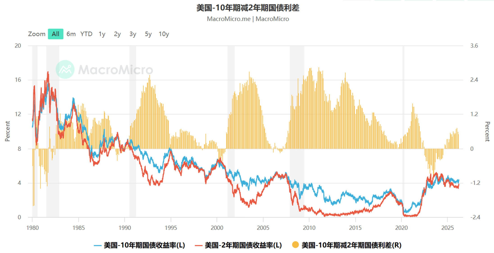
其它
一、历史上美联储加息超过5%利率，降息后发生金融危机的概率很大，因为是金融危机快发生才赶紧降息。24年9月美联储开始降息。
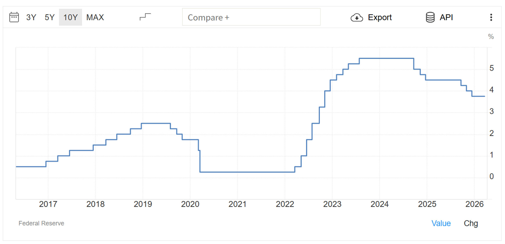
二、目前巴菲特现金储备创新高
信号
VIX恐慌指数：长期均值约20，超过40是极端恐慌水平，历史数据显示，当市场处于底部时，VIX的平均水平约为37。
https://cn.investing.com/indices/volatility-s-p-500
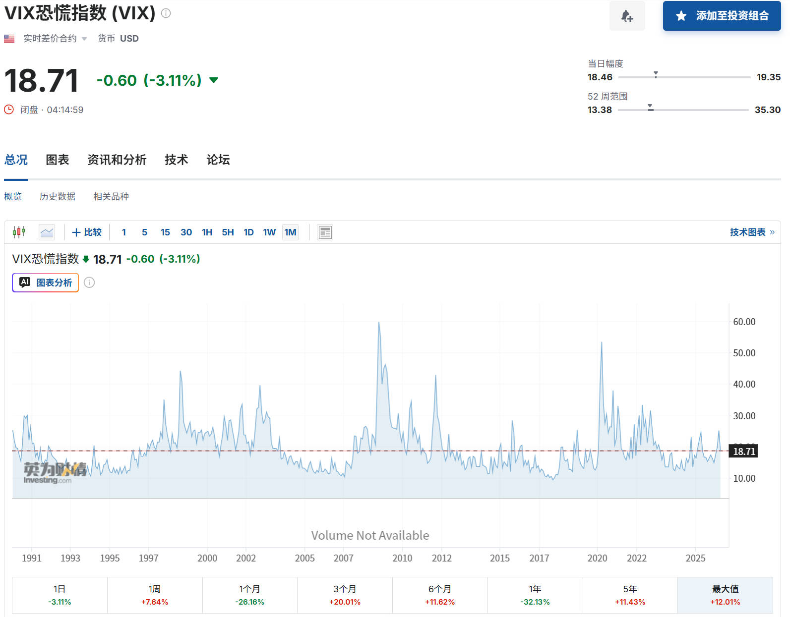
目前情况
一、25年12月日本10年期国债收益率超过2%
二、26年3月伊朗VS美国以色列，霍尔木兹海峡封锁，封锁超过3个月爆发金融危机的风险极大。
预计26年下半年金融危机爆发
资产选择
一、初期选日元。
-
避险货币：美元→日元→法郎
-
美国金融危机，日元套利交易被迫升值
二、中期选黄金。
-
降息和量化宽松QE，市场对货币贬值和未来通胀的担忧会急剧升温，推动黄金上涨
-
如2008年金融危机在美联储开启量化宽松后，黄金价格从2008年10月的低点开始反弹，并在2009年底涨至约1100美元/盎司以上，随后更是在2011年创下历史新高。
-
先回撤40%，然后再翻倍，最后长熊。
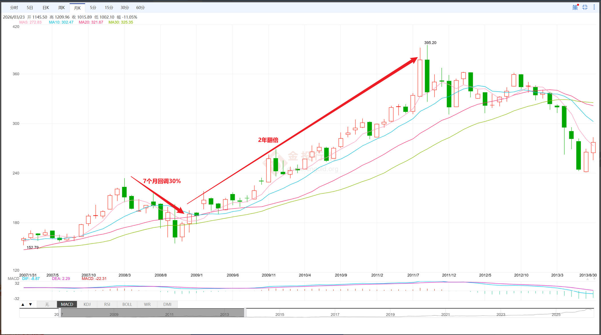
三、后期选股市。金融危机衰退纳斯达克下跌时间1年半左右，美国选纳斯达克100指数、国内选科创创业50指数。
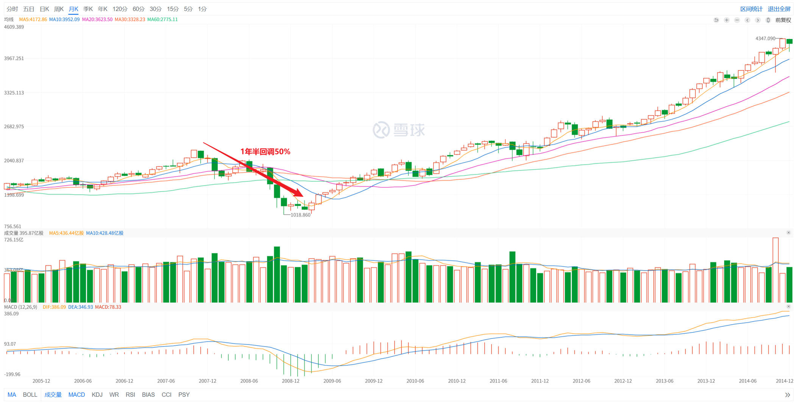
全球金融市场
规模排行
正确的规模排序应该是：房地产 > 股市 > 国债 > 外汇（日交易量）> 大宗商品 > 数字货币
-
外汇日交易量确实最大：2025年全球外汇市场日均交易额达到9.6万亿美元，是所有金融资产中日交易量最高的
-
房地产才是规模最大的资产类别：截至2025年初，全球房地产（住宅、商业及农业用地）总价值高达393.3万亿美元，远超其他所有资产类别
-
全球股票市场总市值约127.9万亿美元
-
全球政府债务规模约106.7万亿美元（IMF数据显示公共债务总额111万亿美元）
-
大宗商品：2025年全球大宗商品服务市场规模约4.77万亿美元
-
数字货币：2025年四季度加密资产总市值约2.93万亿美元
宏观周期
周期定义：必须是类似有往复运动的循环才叫周期，实际金融市场可以有误差。
大周期影响小周期，小周期有反抗力量，每个时间段都有一个主导的周期力量。
一、康波周期(技术周期)
以技术推动，人生发财靠康波。
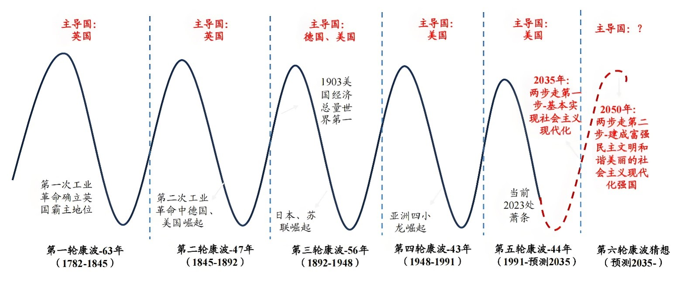
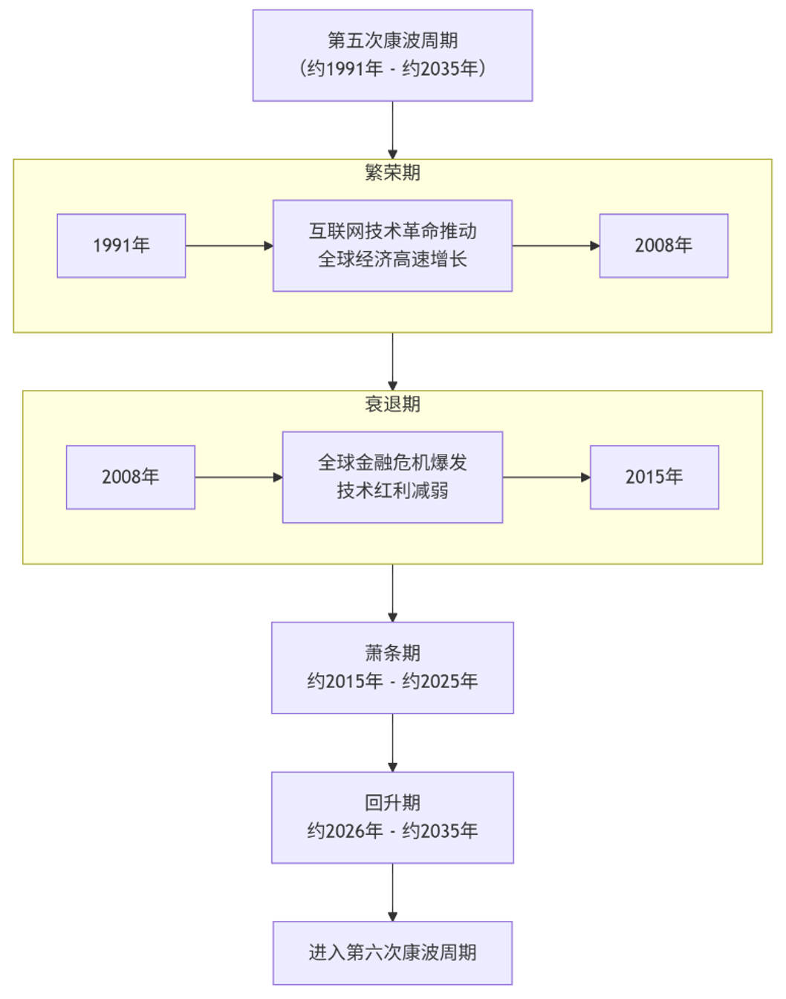
康波衰退以两次金融危机完成，2008年和2015年金融危机。
供给侧改革和反内卷是萧条的标志。2024年7月30日召开的中央政治局会议首次明确提出“防止‘内卷式’恶性竞争”，这被视为“反内卷”政策序幕的正式拉开
2030到2050是回升和繁荣期，康波周期的复苏由主导国引导。
二、朱格拉周期(设备更新周期)
目前都是强行将朱格拉周期划分为8年左右，其实没有任何依据。其实朱格拉周期的根本就是大型设备的投资，包括固定资产投资(就是房地产投资)、基建投资(例如墨脱水电站开发，一带一路等)、工业企业设备投资(例如大规模设备以旧换新)
一、1998-2007年高速增长期：对应工业化、城镇化快速发展阶段，设备投资迎来了较长的景气周期，固定资产投资增速由1997年底的9.3%上升至2007年接近27%的高位水平。
二、2009-2011年政策驱动期：后金融危机时代，"四万亿"投资的驱动下，以基建链为代表的投资需求大幅扩张，进而带动相关的设备需求。
三、2016-2021年产业升级期：受益于传统行业"供给侧"升级改造及经济结构转型推动，跨越了两个完整经济周期。
四、2020-2025年政策复苏期：2020年触底后连续回升，2022年9月国常会决定对部分领域设备更新改造贷款实施阶段性财政贴息，2024年3月国务院印发《推动大规模设备更新和消费品以旧换新行动方案》，推动设备投资快速增长。
三、基钦周期(库存周期)
基钦周期对股市的影响较大。40个月左右，属于滞后指标，适合有实物库存的行业。规律和PMI走势较符合。
PPI：是反映全部工业产品出厂价格总水平的变动趋势和程度的相对数，是反映某一时期生产领域价格变动情况的重要经济指标
PPI走势图 https://legulegu.com/stockdata/m1-ppi
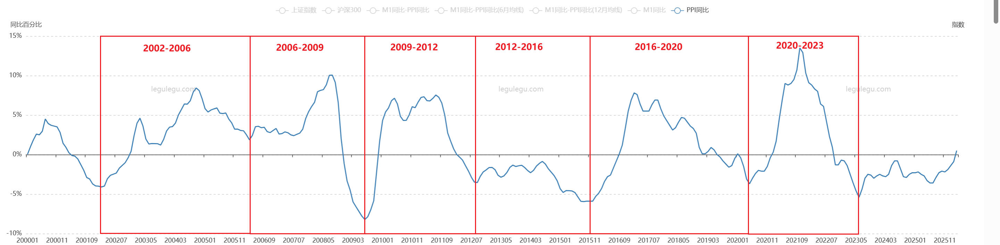
当PPI同比增长超过5%的时候，基本就到阶段性顶部了。
四、美元周期
主要用美元指数走势说明美元周期，美元指数有个缺点就是不包括人民币，目前美元周期并没有很明显。
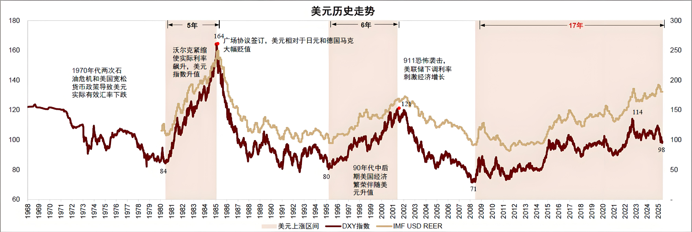
一、美元指数是根据1973年美元兑其它货币的相对重要性制定的。权重如下：欧元57.6%、日元13.6%、英镑11.9%、加拿大元9.1%、瑞典克朗4.2%、瑞士法郎3.6%，美元指数基准为100，小于100说明美元贬值，大于100说明美元升值。
二、因为欧元占比较大，所以有欧强美弱，或者欧弱美强的现象。
三、历史上美元指数有3次大的下跌，都是前期因为美联储的强势美元政策导致美元指数大涨，之后又因为金融危机或者美国衰退导致美元指数大跌。
四、长期美元指数不断贬值，并且中枢下移。
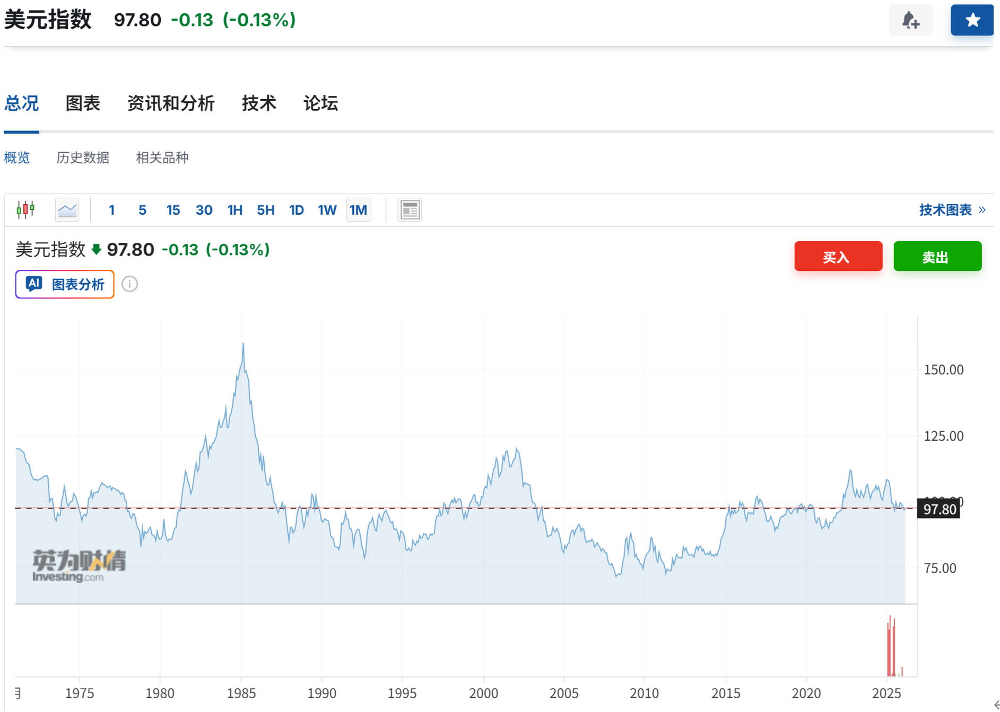
五、1985年下跌
主要驱动因素
1、巨额贸易逆差与国内保护主义压力
20世纪80年代初，里根政府的财政扩张与美联储主席沃尔克的紧缩货币政策导致美元持续走强，但同时也使美国贸易逆差急剧扩大。强势美元严重打击了美国出口制造业，国内贸易保护主义情绪高涨，国会开始考虑针对日本和德国的保护主义措施。
2、美联储货币政策转向
1984年至1985年，美国通胀已显著下降（CPI同比从1980年的双位数降至1984年末的3.9%），但美元指数却继续攀升至1985年2月的历史高点160以上，出现非理性投机泡沫迹象。与此同时，美联储为应对经济放缓风险，实际上已进入降息周期，利差收窄削弱了美元吸引力。
3、《广场协议》的政策协调
1985年9月，美国、日本、西德、法国、英国五国签署《广场协议》，联合干预外汇市场以促使美元有序贬值。实际上，美元在协议签署前（1985年4月左右）已开始贬值，但协议的达成加速了这一进程。到1987年底，美元指数从1985年高点的165附近跌至85左右，两年内贬值近半。
4、美国经济相对增速下降
1985年前后，美国实际GDP增速相对全球其他主要经济体开始放缓。经济基本面的相对走弱，加上“双赤字”（财政赤字与贸易赤字）问题加剧，使美元承受下行压力。
六、2001年下跌
前期牛市：1995年至2001年初，美元指数在克林顿政府“强势美元”政策、美国新经济繁荣以及亚洲金融危机引发的避险需求推动下，从80左右升至121附近的高点。
1、互联网泡沫破裂与经济衰退
2000年3月纳斯达克指数崩盘，标志着互联网泡沫破裂。科技股暴跌引发企业投资锐减和消费信心下滑，美国经济在2001年3月正式陷入衰退。经济基本面走弱是美元失去吸引力的根本原因。
2、美联储货币政策急转弯
为应对经济衰退，美联储在2001年1月3日（非例行会议）紧急降息50个基点，开启了长达两年多的降息周期。到2001年底，联邦基金利率从年初的6.5%大幅降至1.75%。利率急剧下降导致美元与其他主要货币的利差迅速收窄，削弱了其作为高息资产的吸引力。
3、“9·11”事件的重大冲击
2001年9月11日的恐怖袭击对美国本土安全信心造成毁灭性打击，引发全球金融市场恐慌和短期避险情绪。但事件严重打击了美国消费、旅游和航空业，加剧了经济衰退，并导致市场对美国长期增长和安全环境的担忧，最终促使资本外流，给美元带来持续下行压力。
4、财政与贸易“双赤字”问题恶化
为刺激经济，美国政府推出减税计划，财政赤字再度扩大。同时，经济衰退并未改善贸易逆差，2001年经常账户赤字占GDP比例升至约3.8%。市场对美元长期价值的担忧加剧。
七、2022年下跌
前期上涨背景：2022年前三季度的美元牛市，主要受美联储激进加息（全年加息7次，基准利率从0-0.25%升至4.25-4.5%）、俄乌冲突引发的避险需求以及美国经济相对优势三大因素驱动。
1、通胀预期降温与货币政策转向信号
2022年四季度，美国通胀数据（CPI）连续不及预期，从6月高点9.1%逐步回落。市场开始预期美联储将放缓加息节奏，甚至提前结束紧缩周期。这种货币政策预期的转变，削弱了美元作为高息资产的吸引力。
2、经济衰退担忧加剧
随着利率快速上行，美国经济出现走弱迹象：商品消费、房地产投资环比负增长，耐用品订单、PMI等软数据也显示需求回落。市场对美国经济“硬着陆”的担忧升温，导致资金从美元资产流出。
3、非美经济体相对改善
欧洲能源危机缓解：2022年冬季欧洲天然气储备充足、暖冬天气以及能源多元化措施，缓解了此前因俄乌冲突引发的能源危机，欧元区经济前景改善，欧元兑美元从平价以下反弹。
中国经济积极信号：中国优化防疫政策并出台稳增长措施，提振了全球对中国经济复苏的预期，人民币等亚洲货币走强，也对美元构成压力。
4、技术性回调与市场情绪反转
美元指数在前三季度累计涨幅过大（超20%），多头交易拥挤，本身存在技术性回调压力。四季度市场交易逻辑从“避险+利差”转向“增长差异+政策收敛”，加速了美元的回调。
五、美林投资时钟理论
美林时钟缺点就是没有增加汇率这个因素。
衰退期判断：美国萨姆法则。
萨姆法则：该法则指出，当美国失业率的3个月移动平均值相对于过去12个月的最低点上升超过0.5个百分点时，经济衰退就可能开始。这一规则自1970年代以来的准确率为100%。在2024年7月失业率数据公布后已经触及0.5%的阈值，这意味着当前美国可能已经进入衰退状态中，1950年至今，萨姆衰退指标发出的11次信号中，只有1960年的衰退发生在5个月后，其余10次信号出现的时候美国已经处于衰退当中。
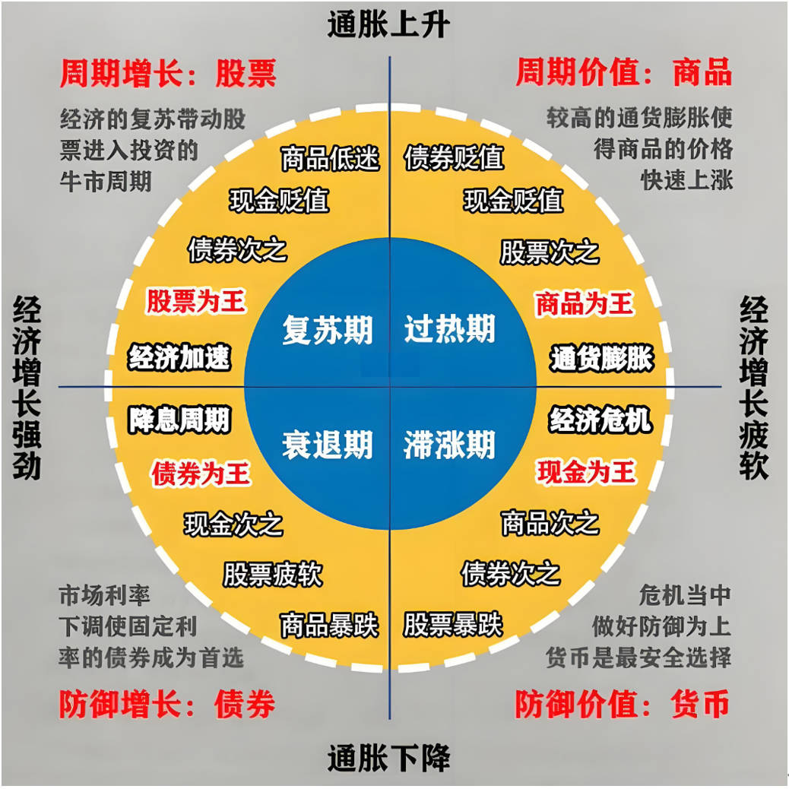
六、房地产周期
严格意义来说，有规律的往复运动的才叫周期，房地产没有周期，受到供给、政策、人口影响较大。
一、基本内容
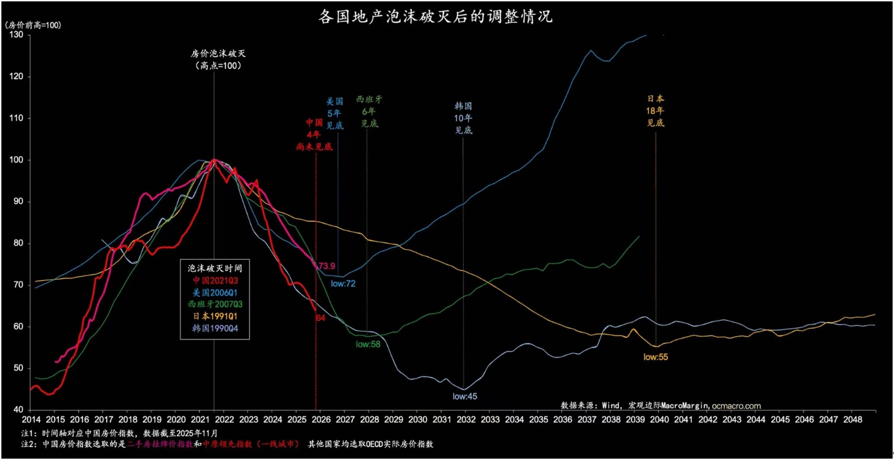
1、供给多。新开工住宅量、待销售新房库存、二手房挂牌量
2、需求少。购房主力人群、高城镇化率、高居民负债率
3、政策。房住不炒、房产税
4、买房时间点。28年左右。
-
利率下降+股市大涨+房价大跌，三者平衡。
-
租售比。因为房价可以炒作，租金炒作不了。国际标准售租比通常为200:1到300:1。举例：杭州某个小区90平房子售价200万，月租金3000元，所以售租比=2000/3=666倍，即需要600个月才能收回成本。合理售价范围应该是3000×200=60万-3000×300=90万之间
5、数据查询
https://data.stats.gov.cn/dg/website/page.html#/pc/national/yearData
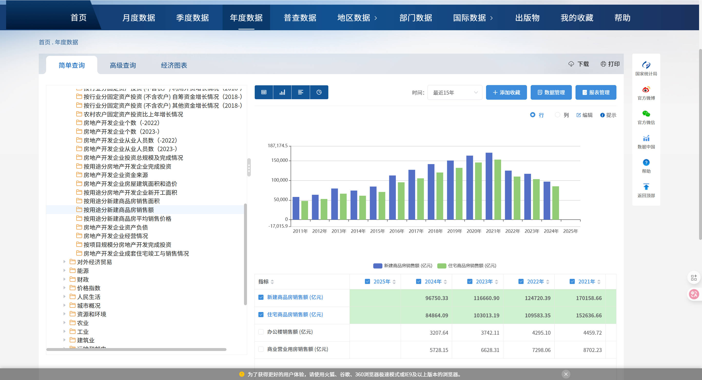
二、三道红线
房企“三道红线”终结！据中国房地产报，26年1月28日，有消息称，多家房地产企业已不再被监管部门要求每月上报“三道红线”相关数据，仅部分出险房企需向总部所在城市的风险处置专班组定期汇报资产负债率等核心财务指标。
全球政治
世界两大阵营
一、GDP排名
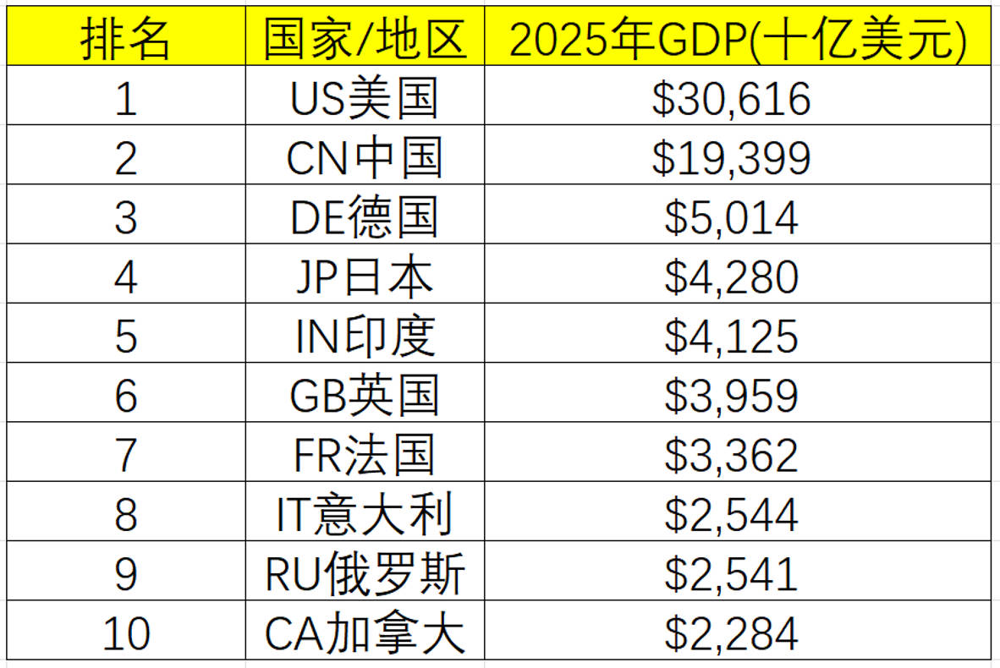
二、合作组织
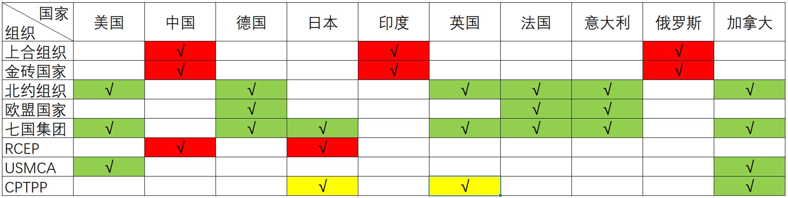
三、地图位置展示，红色东方，绿色西方。
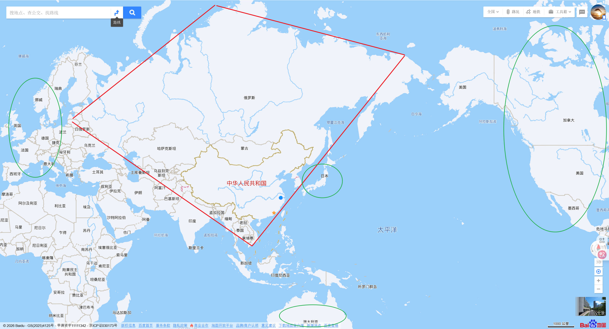
1、东方，合作共赢模式。中国、俄罗斯、白俄罗斯、朝鲜、东南亚、中亚、伊朗、叙利亚、塞尔维亚，人口23亿左右
2、西方，帮派强盗模式。美国是老大，欧盟(德国、法国、意大利)是小弟，英国是搅屎棍，日本和韩国是大血包，加拿大和澳大利亚是资源国，人口9亿左右
3、其它。印度是墙头草，台湾是熊孩子。
4、大国缓冲带
-
中国和俄罗斯有蒙古国
-
中国和印度有尼泊尔
-
俄罗斯和欧盟有乌克兰和白俄罗斯
-
中国和美国有太平洋，但日韩有美国驻军
5、目前冲突。
俄乌冲突，2022年2月。俄乌冲突最终会收割欧洲。
巴以冲突，2023年10月。巴以冲突大概率不会演变为第六次中东战争。第一，以色列背后的美国不希望这样，拜登要控制国内的通胀和债务问题，重返亚太政策也不希望爆发全面的第六次中东战争；第二，伊朗背后的俄罗斯主要是面对乌克兰战争，无暇顾及中东；第三，欧盟现在为能源的来源发愁，也没啥心思关注巴以冲突；第四，东方大国主要是发展经济，对中东战争没啥兴趣；只要巴以背后的大国不想打，第六次中东战争就打不起来。
印巴冲突，2025年4月。巴基斯坦和印度都拥有核武器，全面核战争的可能性不大。
美国入侵委内瑞拉，2026年1月。针对马杜罗的斩首行动。
伊以冲突，2026年2月。特朗普被以色列的内塔尼亚胡忽悠，配合以色列和伊朗开战，而伊朗选择了半封锁霍尔木兹海峡，反而让特朗普难办，目前双方僵持中，对世界经济危害最大。
国家立场判断
1、武器采购
-
例如中巴友谊，巴基斯坦70%的武器来源于中国，相当于把国防压在中国身上，而中国给巴基斯坦军售最惠国待遇。
-
例如美以关系，美国向以色列出售F35战机，并提供核武器。而日韩和沙特却是以高价格从美国采购武器，特别是冤大头台湾，和美国只是军事利益关系。
-
例如俄乌冲突后的俄朝关系，双方签订了军事同盟协议，并且俄罗斯向朝鲜提供导弹技术，朝鲜向俄罗斯出兵乌克兰。
2、条约签订。例如《中朝友好合作互助条约》，但只能反映过去，无法确定现在。如今来看，一方面我国经济重心在东南沿海，另外一方面朝鲜拥核并不符合我国利益，朝鲜现在很难被当做盟友。
3、经济联系。国家愿意大力贸易进口的国家一般是我们支持的国家，例如俄罗斯、白俄罗斯、匈牙利、印度尼西亚等。
全球经济
国际经济体系
1816年金本位制→1944年布雷顿森林体系→1976年牙买加体系(浮动汇率、多元货币储备)
历次全球化
| 次数 | 内容 |
|---|---|
| 第一波全球化 | 西班牙是货币发行国，依靠白银带来的铸币权成为世界霸主 |
| 然而伴随贸易逆差的扩大，欧洲制造业中心逐渐转移到英国 | |
| 西班牙的霸主地位仅维系了40多年(1545—1588) | |
| 第二波全球化 | 英国是货币发行国，依靠黄金带来的铸币权成为世界霸主 |
| 然而在收割殖民地财富的同时，英国的世界工厂地位逐渐让位给美国 | |
| 第二波全球化仅持续了40多年(1871—1914) | |
| 第三波全球化 | 美国是货币发行国，依靠石油带来的铸币权成为世界霸主，拉开了与苏联的差距 |
| 然而伴随贸易逆差的扩大，中国取代美国成为新的世界工厂 | |
| 第三波全球化仅维系了40多年(1980—2024) |
世界各国分工
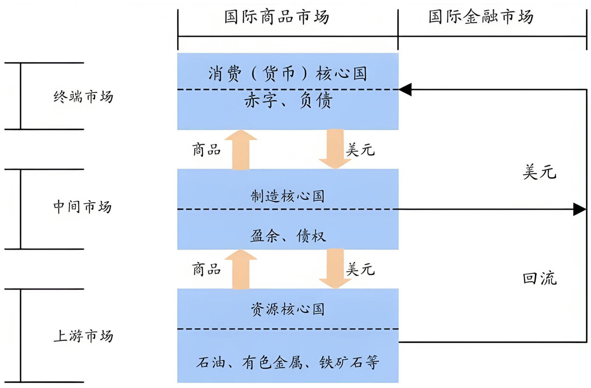
核心消费国（按消费市场规模排名）：
-
美国：全球最大消费市场，消费规模约18.6万亿美元，占全球消费约29%
-
中国：全球第二大消费市场，消费规模约6.9万亿美元，占全球消费约12%
-
日本：消费规模约2.3万亿美元，占全球消费约8%
-
德国：消费规模约2.3万亿美元，占全球消费约8%
-
英国：消费规模约1.6万亿美元，占全球消费约7%
-
法国：消费规模约1.4万亿美元，占全球消费约6%
-
印度：消费规模约1.3万亿美元，占全球消费约5%
-
意大利：消费规模约1.1万亿美元，占全球消费约5%
-
巴西：消费规模约0.9万亿美元，占全球消费约4%
-
加拿大：消费规模约0.7万亿美元，占全球消费约4%
核心制造国（按制造业实力和规模）：
-
中国：制造业规模连续16年保持全球第一，制造业增加值占全球比重接近30%，已迈入全球制造强国行列，与德国、日本同处第二阵列
-
美国：全球制造强国第一阵列，制造业创新能力强
-
德国：全球制造强国第二阵列，制造业质量效益突出
-
日本：全球制造强国第二阵列，制造业技术水平高
-
韩国：制造业强国，在半导体、电子等领域具有全球竞争力
-
印度：制造业快速发展，已成为重要制造国家
-
法国：制造业实力较强
-
英国：制造业保持一定竞争力
-
巴西：制造业在南美洲领先
传统能源资源国：
-
俄罗斯：矿产资源总量位居世界第一，拥有丰富的石油、天然气、钾盐、钴矿等资源
-
美国：矿产资源总量位居世界第二，石油、天然气储量丰富
-
沙特阿拉伯：全球"石油王国"，石油储量和产量均居世界第一
-
加拿大：矿产资源丰富，领土面积世界第二
-
委内瑞拉：石油储量全球第一，达3030亿桶
-
伊朗：石油和天然气储量均居世界前列
关键矿产资源国：
-
智利：全球最大铜矿资源国，铜储量占全球30%以上；锂资源储量全球第一
-
刚果（金）：全球最大钴资源国，钴储量占全球54.5%
-
印度尼西亚：全球最大镍资源国，镍储量占全球42.3%
-
澳大利亚：锂、钴、镍资源均丰富，锂储量全球第二，镍储量全球第二
-
中国：稀土储量全球第一（占全球38%），钨矿储量全球第一
-
阿根廷：锂资源丰富，与智利、玻利维亚组成"锂三角"
-
巴西：稀土储量全球第二，多种矿产资源丰富
其他重要资源国：
-
哈萨克斯坦：铬铁矿、钨矿、铀矿储量均居世界前列
-
秘鲁：铜矿资源丰富，全球第二大铜矿国
-
赞比亚：铜矿资源丰富
消费国：
1、美国的贸易赤字是美元被抛弃和贬值的根本原因。
2、当前的美元信用是共生模式的基础。
制造国
1、中国的自我内卷增强了世界抵抗由于大宗商品引起的通货膨胀能力。
2、大宗商品价格上涨美国没通胀的原因，消费对资源价格敏感度低，通货膨胀压力被中国内卷消化，传导到美国慢。
资源国
长边效应：上游资源国处于供应链最末端，波动性最大。所以大宗商品才会暴涨暴跌。
美国
美国三大霸权
一、军事霸权丧失
在装备差别不是特别大的情况下，打仗不只有武器先进就行，更重要的是后勤力量，论持久战和全国动员力量，全球应该没有哪个国家能比得过中国(可以参考疫情期间全国总动员)。
2023年，中国工业产值占全球 30%，相当于美、日、德三国总和。
二、科技霸权，剩小院高墙
-
科技七巨头海外收入远高于中国的科技巨头
-
目前中国还未突破的被卡脖子的技术包括
| 技术 | 说明 |
|---|---|
| 半导体与集成电路 (最核心短板) | 极紫外(EUV)光刻机：荷兰ASML全球独家垄断，是制造7纳米及以下先进芯片的必需设备。 |
| 电子设计自动化(EDA)软件：全球市场95%以上被美国Synopsys、Cadence和Siemens垄断。 | |
| 光刻胶：用于先进制程的ArF和EUV光刻胶，90%以上市场被日本企业垄断 | |
| 高端制造装备 | 商用航空发动机：国产大飞机C919目前仍使用美法合资的LEAP-1C发动机。 |
| 高端数控机床(工业母机)：五轴联动等高端数控机床在精度、稳定性上依赖德国、日本品牌。 | |
| 关键基础材料 | 高端碳纤维：T1000级及以上高性能碳纤维被日本东丽、美国赫氏垄断 |
| 工业软件与底层系统 | 研发设计类工业软件：CAD、CAE、CAM、PLM等高端市场被法国达索、德国西门子、美国ANSYS等垄断 |
| 工业实时操作系统(RTOS)：航空航天、高端工控领域几乎全部进口。 | |
| 生物医药与精密科学仪器 | 原研创新药：全球首创(First-in-class)药物中国占比不足5%(美国约48%)，新药研发管线仍以“me-too”类为主，原创能力弱 |
| 高端医疗设备：PET-CT、高端核磁共振（MRI）、手术机器人、基因测序仪等，国外品牌占据国内市场85%以上份额。 |
但实现上述关键技术的全链条自主可控，仍需5-15年的持续攻坚，2035年是一个分水岭。
三、金融霸权，依旧强劲。
-
英语由于在现实中不断的被使用，所以通用性进一步提高，美元也是类似的道理。
-
美元是世界最大的支付货币，美元-石油体系依旧稳固。
-
人民币应该不会取代美元，最多成为全球第二的支付货币，因为中国是工业大国，非全球消费大国
美国党派
1、共和党，昂撒老牌资本，亲以不亲犹，代表人物布什和特朗普，油气军工、对外发动战争。
2、民主党，美国犹太资本，亲犹不亲以，代表人物奥巴马和拜登，三大财团(先锋领航、贝莱德、道富公司)、美股七巨头、控制了美联储，推行经济全球化。
3、新兴产业资本，马斯克。
美国金融领域蓄水池
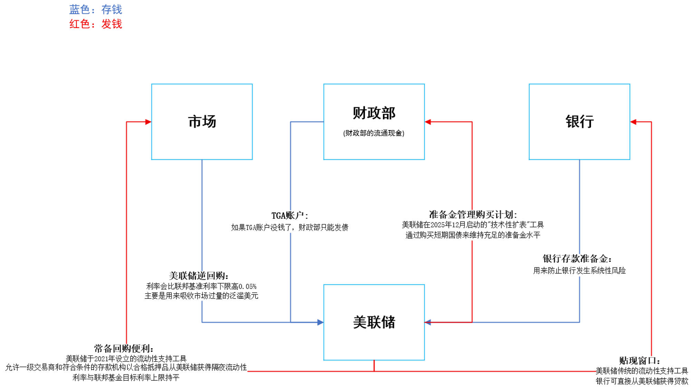
中国
经济三驾马车
一、消费：指国内居民和政府的最终消费支出，是经济增长最基础、最稳定的动力。(但是中国人是最爱存钱的，而美国人提前消费)
二、投资：包括固定资产投资(如基建、房地产、制造业投资)和存货投资，能快速拉动需求，但需注意投资效率和债务风险。(容易产生泡沫，主动刺破泡沫很痛苦，例如房地产泡沫)
三、净出口：指出口总额减去进口总额的差额。出口能带动国内生产和就业，但受外部需求和国际贸易环境影响较大。(容易受到贸易战影响，例如特朗普2018年和2025年发动的贸易战)
中国如何避开修昔底陷阱
1、发展内循环
核心，不用在国外市场和欧美激烈厮杀。最重要的是要提高居民收入和实现共同富裕。
2、发展一带一路
内循环的辅助，消耗国内过多的生产能力。
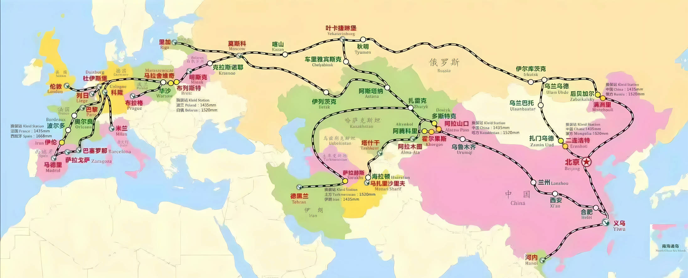
3、发展东南亚
如果说欧盟是德国后花园、拉美是美国后花园，那东南亚就是中国后花园，东南亚是最理想的原材料产地，也是未来中国南海舰队最理想的驻扎地。
4、RCEP体系
RCEP体系下的内循环是解决东亚内卷的出路。一个23亿人口的区域共同体，对内减税，对外加税，足以打造成全球最重要的经济中心。从国际政治或军事的角度来说，如果黄种人世界能联合起来，就能成为全球最强大的政治经济文化中心之一。东亚联合舰队可能会出现，驻日和驻韩美军将被赶走，东亚各国不必再维持那么高的军费开支。历史上当蒙古人放下仇恨走向联合后，迅速成为当时世界上最强大的政权，一度远征欧洲，将白人打得节节败退。未来如果黄种人也能联合起来，那也必然能将白人势力彻底赶出西太平洋地区，重新开启亚洲的时代。
人民币锚定什么
1、以前，西班牙“白银”→ 英国“黄金”→美国“石油”→中国“高端制造业”+“商品”
2、现在
-
18年中美贸易战和22年俄罗斯乌克兰冲突之后，大宗商品逐渐和人民币形成锚定关系。包括俄罗斯用人民币结算油气资源、沙特高溢价收购中国企业、伊朗用人民币结算石油、宝钢用人民币结算巴西铁矿石
-
大宗商品慢慢锚定人民币，那人民币锚定什么？中国不可能走美国的军事霸权和金融霸权的老路，只能依靠科技行业引领全世界。当中高端制造业份额过大挤压世界其它国家的时候→央行就收紧政策，抑制中高端制造业发展，让其它国家有口汤喝；当中高端制造业呈现下滑趋势→央行就放松货币政策，配合其它部委，加大对科技的支持，打击对我们产生威胁的国家；锚定中高端制造业比军事和金融靠谱多。这样，未来对A股影响最大的部位应该是工信部和发改委，央行打配合
中央政府杠杆率
目前只有中国和德国的中央财政弹药较多。
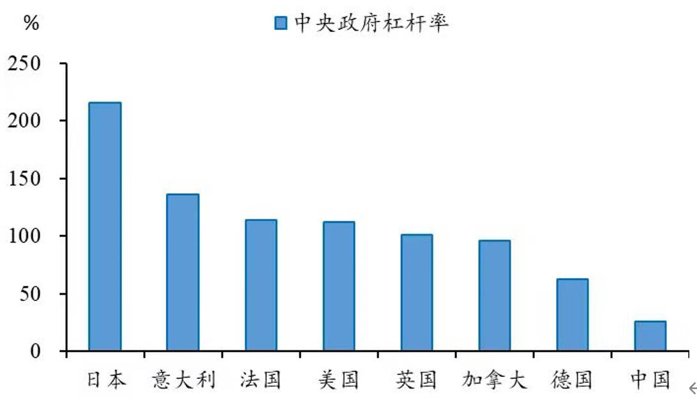
国企定价
一、国企在基础资源(水、电、油、气、路网等)上的定价，其政策目标是兼顾促进产业发展与保障基本民生。
二、中国作为制造业大国，工业确实是基础资源(尤其是电、水)的消耗主体，其消耗量远高于居民生活消耗。因此，基础资源价格对工业成本影响巨大。
三、居民用水用电价格远低于工业用水用电价格
台湾
一、重要性
1、海上货轮经过台湾到达日本，收复台湾日本就会乖乖听话
2、台湾有最大的半导体代工企业台积电
3、收复台湾，日本跪下，韩国美军离场，东北迎来安全的地区环境，国家可以加大对东北的投资，东北振兴。同理，福建也会有较大的发展
二、机会
收复台湾，中国经济会迎来二次腾飞，不用怀疑，股市会先暴跌再暴涨，短期欧美肯定会先搞制裁中国，加上A股散户多，散户肯定先砸盘。
三、武统情况
1、台湾当局宣布独立
2、台湾和美国建交
3、美国在台湾驻军
四、武统最好的局面
1、短期内(大概两周时间)解决战斗，不给美日干涉的机会
2、在中印边界部署一定量的军队，防止印度趁机攻打巴基斯坦
3、有足够的战略储备(主要是石油和橡胶)，极端条件下能同时应对台湾和印度方向战争的能力
五、时间点
最快2027年，最慢2030年
1、舆论造势，新华社在2025年10月底至11月初就台湾问题发布了一系列重要表态，特别是通过署名“钟台文”的系列评论文章，清晰地传达了当前对台政策的立场和方向。
2、2025年11月5日福建舰正式入列。按国际惯例，航母从服役到形成完全战斗力通常需要5-8年时间，但福建舰由于采用了成熟技术和前期经验积累，进度远超预期。
3、26年3月人民日报，钟声署名对日本的警告
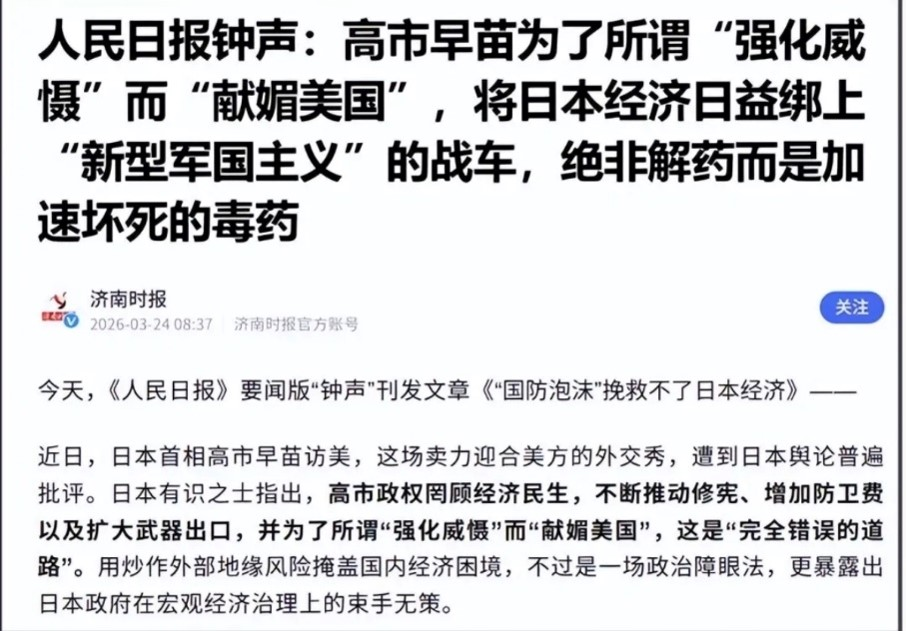
4、27年8月1日建军100周年的日子
5、京台高铁，计划在2035年前建成
六、投资选择
乱世买黄金，福建板块，军工板块
定居城市选择
佛山
-
美食之都(联合国认证，包括成都2010年、佛山顺德2014年、澳门2017年、扬州2019年、淮安2021年、潮州2023年、泉州2025年)。
-
中国城市空气质量TOP30。
-
平均房价1w出头，有地铁，广佛同城。
韩国
金丝雀称号
韩国股市确实对金融危机高度敏感，往往在危机前期出现大幅下跌，起到“全球经济金丝雀”的预警作用。这主要源于其经济结构和市场特点。
一、经济结构高度外向，易受外部冲击
韩国经济对外依存度极高，出口占GDP比重约50%，其中半导体、汽车等关键产业深度融入全球产业链。
能源严重依赖进口，约85%的原油需经霍尔木兹海峡，地缘政治风险直接冲击其经济命脉。
二、外资主导的市场结构放大波动
外资持股占比超过30%，在半导体等核心板块甚至超过45%。全球风险偏好转变时，外资往往率先撤离。
程序化交易占比高(约40%)，下跌时易触发连锁抛售，加速市场崩盘。
三、历史表现印证其敏感性
1997年亚洲金融危机：韩国股市从1997年3月1277点暴跌至1998年9月261点，跌幅约80%，是受危机冲击最严重的市场之一。
2008年全球金融危机：韩国股市市值年内缩水超40%，单日跌幅曾超10%，韩元兑美元汇率暴跌。
2026年3月暴跌：因地缘冲突升级，韩国KOSPI指数单日暴跌7.24%触发熔断，跌幅远超同期全球主要市场，再次体现其“金丝雀”特性。
印度
现状
| 内容 | 说明 |
|---|---|
| 外患 | 印度自建国以来从未遭遇过重大外来侵略 |
| 制度 | 在联邦制+选举制的结构下新德里政权很难让南方各邦接受印地语。这使印度面临悖论：如果推行工业化+世俗化，会加剧南方沿海地区与内陆农村地区的经济和文化差异，带来解体风险；如果继续沿用印度教教义，其种姓制度又不利于培养高素质的国民，其人口红利无法转换为人才红利 |
| 现状 | 印人党选择宗教化+工业化的路线，这导致印度在经济高速发展的同时，社会也愈发撕裂 |
| 为压制地方分离主义，印度热衷炒作“中国威胁论”，把内部矛盾转化为印度民族和中华民族的矛盾，并期待与我国爆发小规模冲突，以激发其国族认同 | |
| 我国不可落入它的圈套，要么就扶持巴基斯坦当代理人，避免亲自下场，以拖待变。要么就倾国力与其决战，打垮新德里剥削政权，在印度半岛推行民族自决。今当取之，不遗后世之忧 |
同业存单
一、投资资产风险等级，同业存单属于R2
R1(低风险)：本金亏损概率极低，收益波动小。主要投资于国债、银行存款、货币市场工具等。
R2(中低风险)：本金亏损概率较低，收益有一定波动。主要投资于债券、同业存单、高信用等级债券基金等。
R3(中等风险)：存在本金亏损可能，收益波动较大。通常投资于混合型基金、信托计划等。
R4(中高风险)：本金亏损可能性较高，收益波动大。常见于股票基金、私募股权基金等。
R5(高风险)：本金亏损概率很高，收益波动极大。主要涉及期货、期权、衍生品等。
二、定义：机构和银行间的定期存款凭证
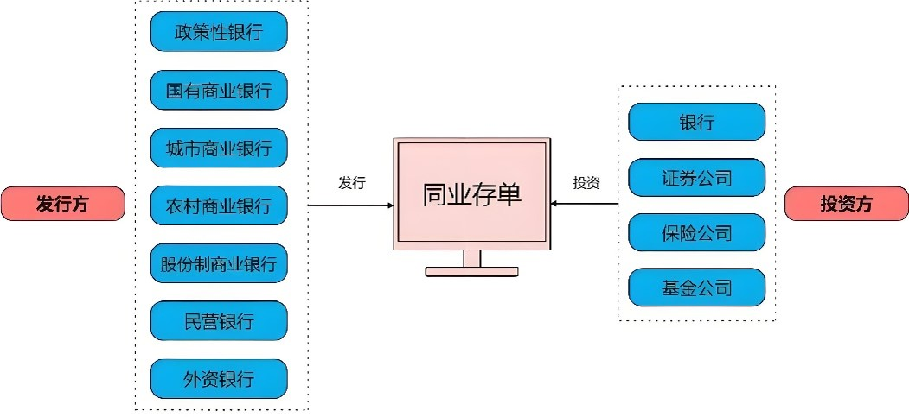
三、标准：以中证AAA同业存单指数为参考标准
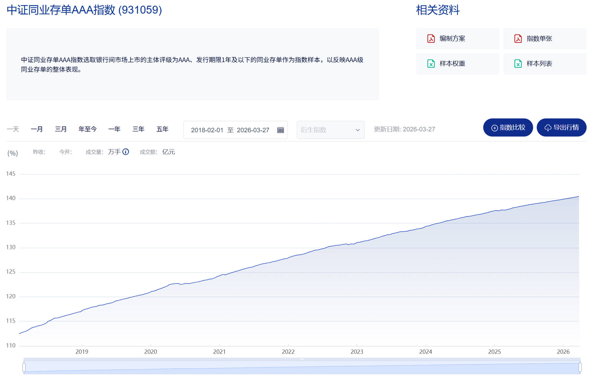
四、收益率：同业存单>货币基金(余额宝、理财通等)>银行定期>银行活期
五、特点：国内银行倒闭可能性很低，总是走出单边上涨趋势
六、选择：支付宝→基金排行→同业存单基金→高夏普率排行
债市
基本内容
一、国债收益率表示投资者持有到期的年化回报率，国债收益率上涨意味着国债价格下跌，国债收益率上涨类似变相加息。未到期卖出则可能会亏损。例如2023年硅谷银行破产，就是因为在2020年买入大量低利率长期美债，然后在美联储2022年激进加息后，硅谷银行持有的长期美债出现严重浮亏，结果储户对硅谷银行没有信心，出现挤兑潮，迫使硅谷银行大量卖出长债，把浮亏变成实亏，最终破产。
二、发债是政府财政行为，发债被市场认购就是缩水。如果央行亲自印钞购债就是放水。
三、10年期国债收益率(又叫名义利率，或无风险收益率),10年期国债收益率=实际利率+通货膨胀率
四、内债：央行发行的国债被国内市场购买；外债：央行发行的国债被国外市场购买。内债违约的影响比较可控，例如中国和日本属于内债。
日本国债的持有人结构呈现出"内债为主、央行主导"的显著特征。
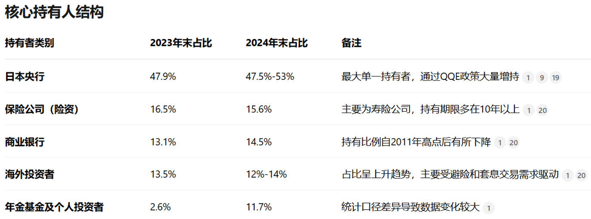
中国国债的持有人结构呈现“商业银行主导、国内机构为主、外资占比较低”的鲜明特征。
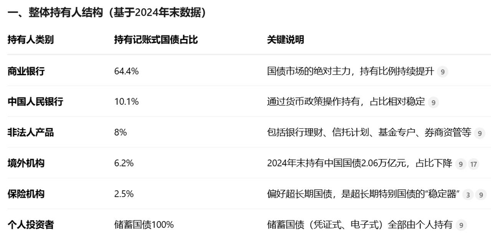
五、外债太多怎么办，例如美债。
-
减少财政赤字，降低债务；
-
大放水制造货币通胀，稀释债务；
-
拖着，等新技术革命带来的经济快速发展，AI革命给美元续命；
-
违约，外债违约会导致本国严重的国家信用危机；
分类
| 分类 | 举例 | 说明 |
|---|---|---|
| 利率债 | 国债 | 由政府或国家背景机构发行，信用风险极低，价格主要受利率影响。 |
| 地方政府债 | ||
| 政策性金融债 | ||
| 政府支持机构债 | ||
| 信用债 | 金融债 | 由企业等商业机构发行，信用风险是主要考量因素。 |
| 企业债 | ||
| 公司债 | ||
| 非金融企业债务融资工具 |
基本影响因素
1、通胀预期上升、或经济强劲、风险偏好下降→央行货币紧缩→国债价格下降
2、财政赤字上升→国债价格下降
美债
一、美债违约的难度比较大，只有美国两党没有通过美国债务上限并且TAG账户余额见底，无法新发国债的时候才可能导致美债违约(注意：临时拨款法案只会影响美国政府是否被迫关门)
二、了解美债的人都知道，美债的投标倍数是非常敏感的数字，2.6倍算比较高了，代表市场需求旺盛。2.4倍算非常低了，代表市场需求疲软。低于2.4倍，就是危险值了
三、美国10年期国债收益率作为全球资产价格之锚，收益率上涨利空股票。
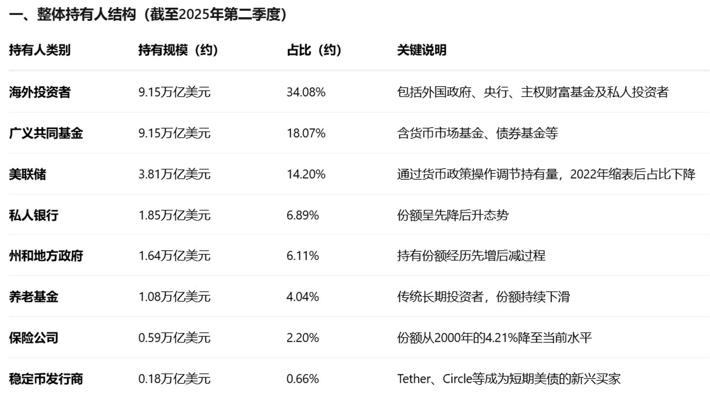
30年国债ETF
历史上最长回调1年，最大跌幅20%
https://www.csindex.com.cn/#/indices/family/detail?indexCode=931080
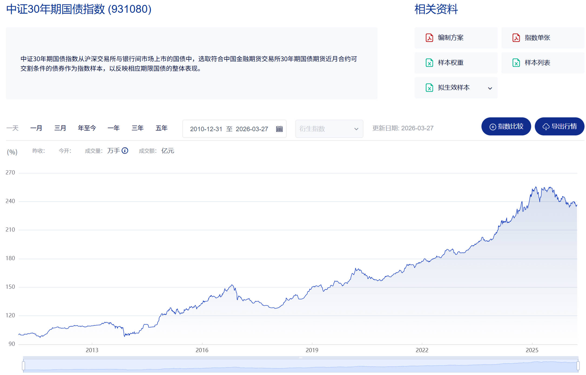
一、波动大，比10年期、5年期、1年期国债更合适交易。
二、金融监管收紧，国债价格下跌。
三、受利率影响最明显。保险机构和中小银行是30年期国债交易的主力。经济强劲或通胀预期上升→加息→国债价格下跌→国债收益率上升→新发行的国债收益率越高→二级市场的抛售潮越大，亏的是二级市场的投资者。举例：假设你持有面值为1000元、票面利率为10%的国债，如果此时加息，新发行的国债利率为15%，此时你手里的国债是卖不出去的，必须降价5%(即950元)才能卖出去。
四、股市跷跷板。股市赚钱效应高，国债下跌，因为国债的钱都流向股市了。
五、历史记录
1、2013年回调半年，跌15%
金融监管收紧：2013年3月25日银监会发布的《关于规范商业银行理财业务投资运作有关问题的通知》
货币政策紧缩：2013年央行实施"中性偏紧"的货币政策，公开市场净投放仅1138亿元，远低于前几年
2、2017年回调1年，跌20%
金融强监管下的去杠杆政策：2017年银监会密集出台多项监管文件，重点整治同业业务、理财业务和委外投资。"一行三会"联合发布资管新规征求意见稿，直接冲击债券市场的配置需求。
货币政策紧缩：央行全年两次上调公开市场逆回购利率和MLF利率，累计上调20个基点，维持资金面"紧平衡"状态。银行间7天质押式回购加权利率平均达3.31%，较2016年上升75个基点。
3、2020年回调半年，跌10%
疫情后复苏：经济V型反弹，供给压力叠加，市场风险偏好上升。
政策正常化：2020年初：新冠疫情爆发后，央行实施超常规宽松政策，包括多次降准降息、增加再贷款再贴现额度等
4、2025年6月开始
监管政策扰动：9月初证监会发布《公开募集证券投资基金销售费用管理规定（征求意见稿）》，拟取消公募债基"7日免赎回费"优惠政策，引发市场对债基负债端稳定性的担忧。
货币政策宽松预期落空：一季度：央行中止买债、资金面收紧，30年期国债收益率从低点快速上行。四季度：央行重启国债买卖但规模不及预期，年末机构赎回压力加大，收益率高位震荡。26年3月伊朗冲突，霍尔木兹海峡封锁，全球通胀预期上升。
"股债跷跷板"效应显著：2025年A股市场表现强劲，上证指数全年上涨18.4%，深证成指上涨29.9%
股市
M0、M1、M2
M0：流通现金
M1：流通现金+个人和企业活期存款+微信支付宝等余额
M2：流通现金+个人和企业活期存款+微信支付宝等余额+个人和企业定期存款+住房公积金等
通货膨胀
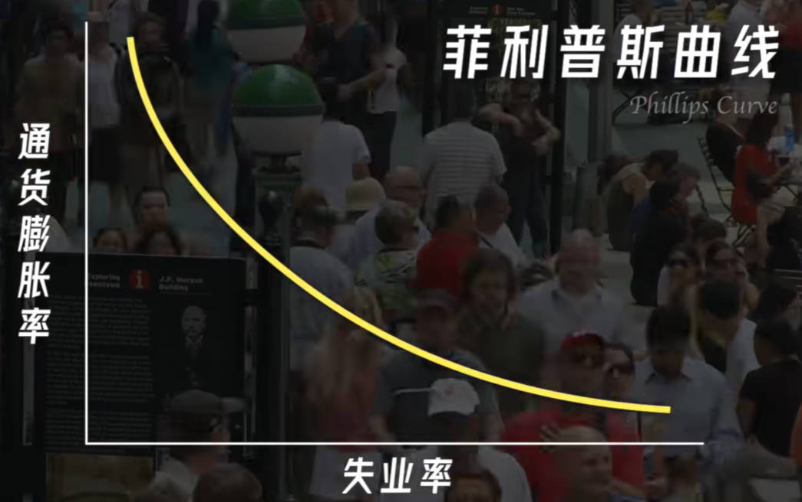
1、需求拉动型：基建投资；M2货币超发；
2、成本推动型：垄断企业提高成品价格；工资普遍上涨；
3、输入型：进口的大宗商品或原材料价格上涨；
4、结构型：科技企业工资的上涨带动其它行业工资上涨；猪肉或食品价格上涨；
成交量和关注度
1、成交量：千股涨停+见顶量能快点跑，千股跌停+见顶量能快加仓
-
量为价先。过去的量为价先是指成交量的上行是股价上行的先行指标(赌徒多了赌场才赚钱)，由于互联网的快速发展，现在的量为价先是指成交量的大幅度上行反而有可能是股价下跌的先行指标(大部分赌徒都已经下注)
-
见顶量能。2015年6月12日A股市值创历史最高纪录70.98万亿元，2015年牛市见顶时的量能(成交额)为2.5万亿。2024年目前A股总市值大概100万亿，推算当前A股见顶量能=2.5/70*100=3.57万亿，恰好10月8号A股成交额3.45万亿
-
维持行情的量能计算。量能也可以应用黄金分割比例。这轮峰值量能3.45万亿，乘以0.618=2.1万亿。短期行情维持2万亿以上的量能，才比较靠谱一些
2、关注度。【微信指数】小程序搜索“a股”“牛市”关键字，互联网时代，消息的传播其实只有可冷的一周时间。
各国央行对比
| 内容 | 中国人民银行 | 美联储 | ECB欧洲央行 | 日本央行 |
|---|---|---|---|---|
| 成立时间 | 1948年 | 1913年 | 1998年 | 1882年 |
| 主要职责范围 | 货币政策、汇率管理 | 货币政策、金融监管 | 货币政策、监督银行系统 | 货币政策为主 |
| 与财政的协调性 | 高度协同 | 原则上独立(实务上时有配合) | 独立强(受成员国博弈影响) | 名义上独立(实务上多有配合) |
| 主要政策目标 | 就业/增长/通胀/汇率 | 就业+通胀 | 通胀 | 通胀 |
| 政策工具 | 逆回购/MLF/加息/降息等 | FFR/QE/QT等 | MRO/LTRO等 | 政策利率/QQE |
| 资产规模 | 约6.3万亿美元 | 6.7万亿美元 | 7.1万亿美元 | 约5.1万亿美元 |
| GDP占比 | 约34% | 约23% | 约42% | 约118% |
逆回购
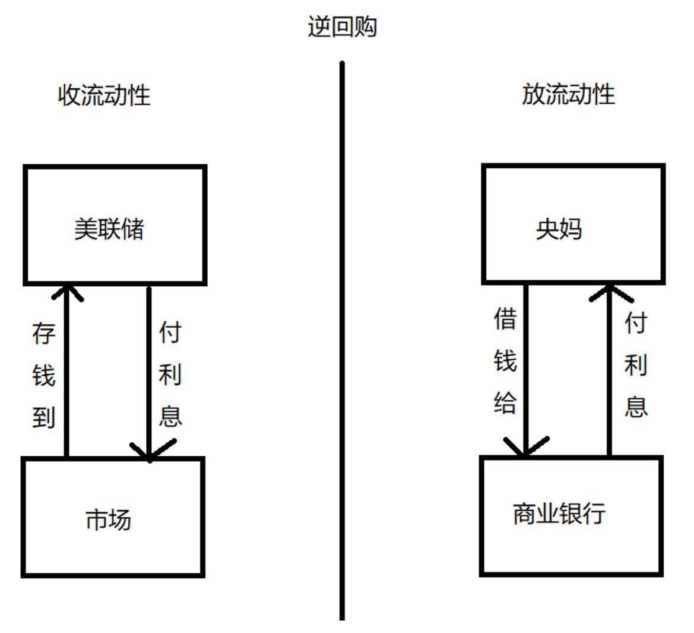
宽货币紧信用或紧货币宽信用
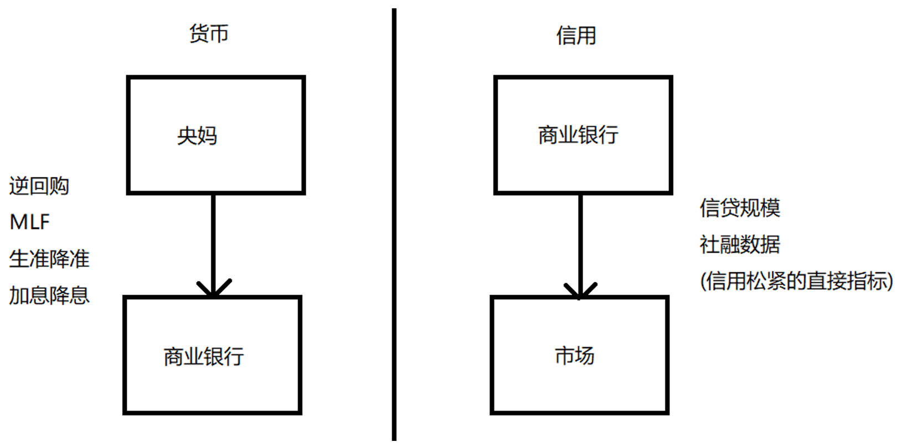
缩表扩表和量化宽松
1、表是资产负债表，缩表意味着缩水，扩表意味着放水。
2、量化宽松QE：在利率已经为0的前提之下，直接印钱购买国债，意味着超级大放水。
3、按照西方经济学理论，有且仅有加大印钞力度这一个办法化解危机。其实就是利益集团控制了西方世界，贫富差距加大，有钱的越有钱。
日本MMT货币理论
1、就是大放水QQE，央行下场大放水。
2、大放水不发生通胀的原因：
大部分资金没有流向社会(存放在银行的准备金3.26万亿美元+企业银行存款4.51万亿美元，这两个差不多占了日本总印钞的2/3了)
日本央行通过直接购买股票ETF的形式把资金流向了股票市场。导致的后果就是贫富差距越来越大。
美股
美联储
一、1913年，国会通过了《联邦储备法案》，让由少数犹太银行家和华尔街精英所左右和操纵的美联储成立。
二、美国收割全球资产的底层逻辑：美国是世界最大的进口国+美元是世界最大的支付货币国家，通过加息降息影响需求端，收割全世界。收割流程是，美联储加息→提高美元利率和减少世界的商品需求→全球美元回流美国→其他国家资产暴跌→美联储降息→美元流出美国→抄底其他国家优质资产。
三、美联储加息降息的两个判断指标就是：非农就业数据和核心CPI通胀，即失业率低于5%适合加息；通胀率超过2%的目标适合加息(这里要注意欧洲央行和日本央行主要关注通胀指标)
四、央行只能调控短期利率，但也可以购买长期国债影响长期利率(例如日本央行的QQE)
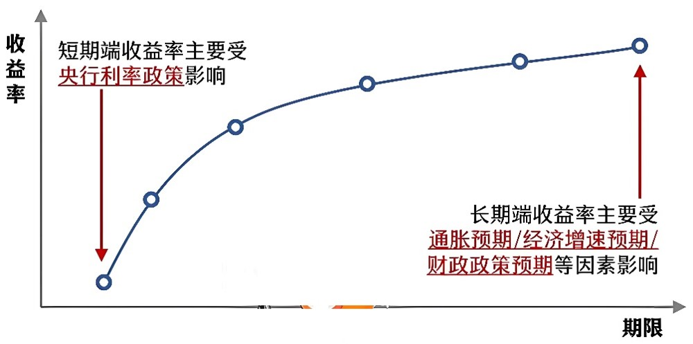
五、历史上想动美联储的美国总统，基本没有好下场，像林肯和肯尼迪直接被脑洞打开
-
林肯，他想从美国秘密组织共济会手中收回美联储，并在内战时期发行了美国第一种法币“美国政府券”，推行林肯绿币
-
肯尼迪，1963年6月4日，肯尼迪签署了一份鲜为人知的11110号总统令，这项法令可以让美国财政部“以财政部所拥有的任何形式的白银，包括：银锭、银币和标准白银美元作为支撑发行‘白银券’”，并立刻进入货币流通。这个政策将让美国政府从私有的中央银行美联储手中重新夺回货币发行权。国家将重新掌握美国的货币发行权，彻底摆脱美联储的控制
六、美联储的公开市场将由19人组成，但每年只有12人有投票权，美联储利率决议由投票决定，每个人选都代表了某些资本
七、美联储降息类型
| 内容 | 对抗衰退型 | 紧急救市型 | 回归常态型 |
|---|---|---|---|
| 降息目的 | 提振经济、稳定就业 | 缓解市场恐慌、防备经济衰退 | 抑制通胀目标达成、回归常态 |
| 举例 | 2007年9月-2008年12月，雷曼危机前后 | 2020年3月两次降息，新冠后救市 | 2024年9月开始的通胀缓解后的降息 |
| 特点 | 降息幅度大，低息持续时间长，降息后股市常常持续低迷 | 急速降息，但低息持续时间短，降息后股市一般迅速反弹 | 降息速度较缓，降息幅度一般比较小，降息后股市一般表现强劲 |
纳斯达克100指数
最长回调2年，下跌80%
一、金融霸权，牛长熊短，美联储降息扩表
二、降息类型
金融危机降息：美股低迷1年半左右，例如08年金融危机
紧急降息：股市立马反弹，例如新冠疫情
常规降息：降息缓慢，股市强劲，例如24年9月降息
三、预计26年下半年，美国金融危机
A股
A股定位变化
1、2024年之前，房地产拉动的大基建大投资+较高的银行贷款利率推动
2、2024年之后，高质量的金融市场+高端制造业发展，政府需要打造流动性强的债市和股市来为高端制造业(卡脖子)行业提供融资的工具
-
2024年7月1日央妈的“国债借入操作”公告开始对国债进行市场化干预
-
2024年9月24号央妈首次创设结构性货币工具支持股市发展
A股和外资观察
一、A股有五股势力，国家队负责大盘和优质资产维稳，外资由美联储指挥，内资是软骨头，游资和韭菜在小盘股拼杀。
二、观察外资动向
-
北上资金(包括沪股通和深股通),占比95%左右。从2024年8月19日开始，北上资金的流入流出数据就暂停披露了
-
QFII的结售汇。QFII审批后可以买入中国的所有资产，而陆股通无需审批只能买入股票和ETF。这里可以看证券投资类目判断，查询网站https://www.safe.gov.cn/safe/yhjsh/index.html
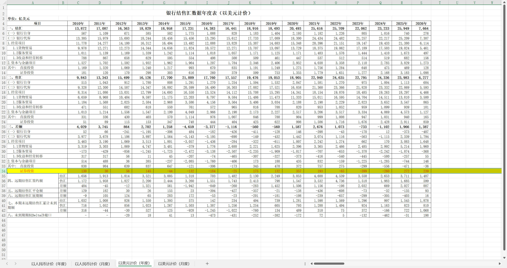
财政政策和货币政策
一、货币政策(降准降息等)改善经济基本面，财政政策主要是发行国债并使用。
二、央妈四大目标。就业稳定、经济增长、物价稳定、国际收支平衡，现阶段是就业优先政策
三、传导路径：央行→货币市场→金融机构→企业→居民
四、财政政策和货币政策看核心CPI，消费看CPI(就是普通人的体感)，反内卷看PPI。
五、各个指标
先行指标：货币供应量M1-M2剪刀差；
同步指标：中国核心消费者价格指数(核心CPI)、PPI走势；
滞后指标：中国消费者价格指数(CPI)；
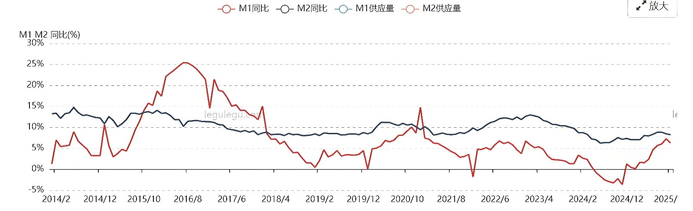
六、通货膨胀下
紧缩性财政政策：包括增加税收、减少政府性支出等
紧缩性货币政策：公开市场卖出国债、提高存款准备金、提高利率、提高再贴现率、商业银行的信贷活动进行直接干预(如窗口指导)、消费者信用控制
央妈货币工具箱
| 工具 | 说明 |
|---|---|
| 加息降息 | 大招，加息人民币升值，降息人民币贬值，由于存在三元悖论，所以人民币只会区间波动 |
| 升准降准 | 准指存款准备金率。存款准备金率10%，商业银行需要将储户存款的10%放到央妈那 |
| MLF和逆回购 | MLF和逆回购就是央行借钱给商业银行的货币工具，其中逆回购一般是7天期限，MLF一般是1年期，到期的时候商业银行要还本付息还给央行。如果央行没有进行MLF续期，那么就是资金净回笼(比如一年前操作了5000亿MLF，现在只续了2000亿，那么就是收水3000亿)。央妈逆回购增大是释放流动性，央行MLF利率下降是释放流动性。 |
| 远期售汇风险准备金 | 当人民币贬值预期较强时，央行会上调准备金率（例如从0上调至20%），从而提高企业远期购汇的价格，减少卖出人民币压力。 |
| 宏观审慎调节参数 | 宏观审慎调节参数从1.25上调至1.5，会有利于人民币升值 |
| 外汇的存款准备金率 | 内部降准，释放人民币流动性，人民币一多，人民币会贬值。外汇降准，释放美元流动性，美元一多，美元就会贬值，有利于人民币升值 |
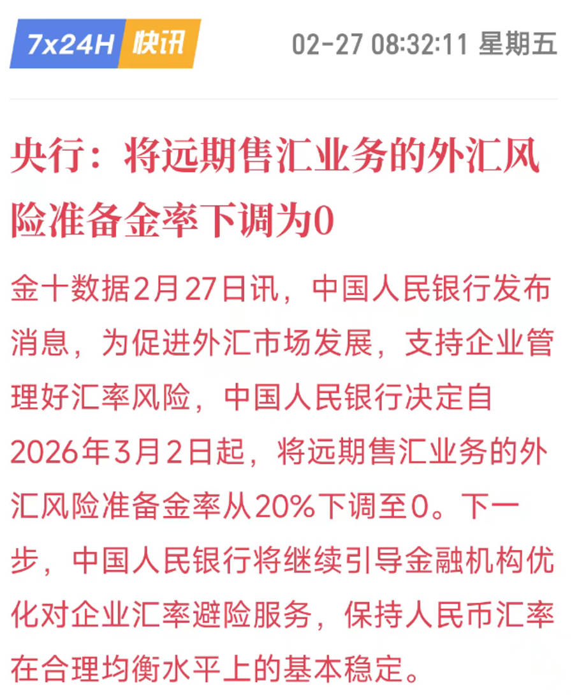
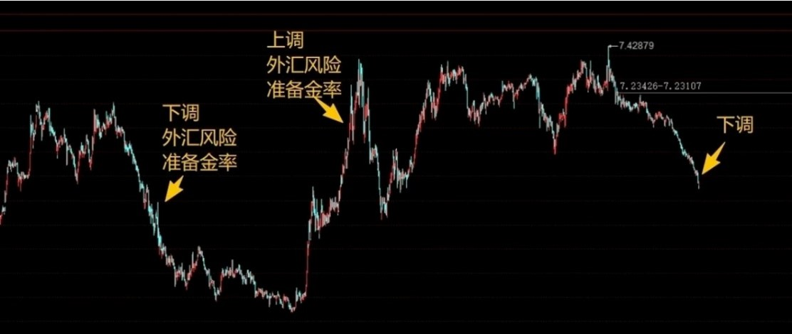
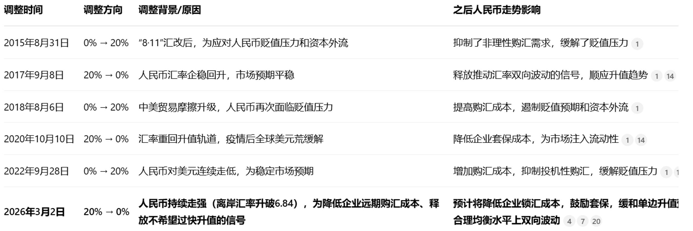
A股机会-主要跟美联储
1、24年9月政策底-25年2月市场底-25年6月业绩底
2、民营企业座谈会。
-
第一次民营企业座谈会2018年11月1日
-
第二次民营企业座谈会2025年2月17日
3、A股指数调整最长时间就是4年。目前是2021年3月-2025年3月，并且指数跌幅超过70%，在未来一年时间内会出现上涨80%以上的大级别行情
4、存款搬家和A股。历史上“居民存款/股市总市值”的比值在1.1-2之间波动，例如2014年牛市启动前的比值是2，到2015年中比值下降到0.85，期间A股迎来了大幅度的上涨。
5、国内社融大增，同步增加超过10%
6、国内M1-M2剪刀差缩小
7、核心CPI拐点
8、PPI拐点
9、CPI走势
重要规划和会议
一、十五五规划：内需和科技
二、中央经济工作会议
-
每年12月左右, 定基调、明方向
-
年度经济工作的“最高风向标”：总结当年经济，分析形势，定调下一年宏观政策(如财政、货币政策)，部署重点任务。
三、全国两会
-
每年3月，定目标、合法化
-
年度经济目标的“立法确认”与“全民动员”：审查并通过政府工作报告，确定当年GDP增速、财政赤字等关键经济目标，并经全国人大批准后具有法律效力。
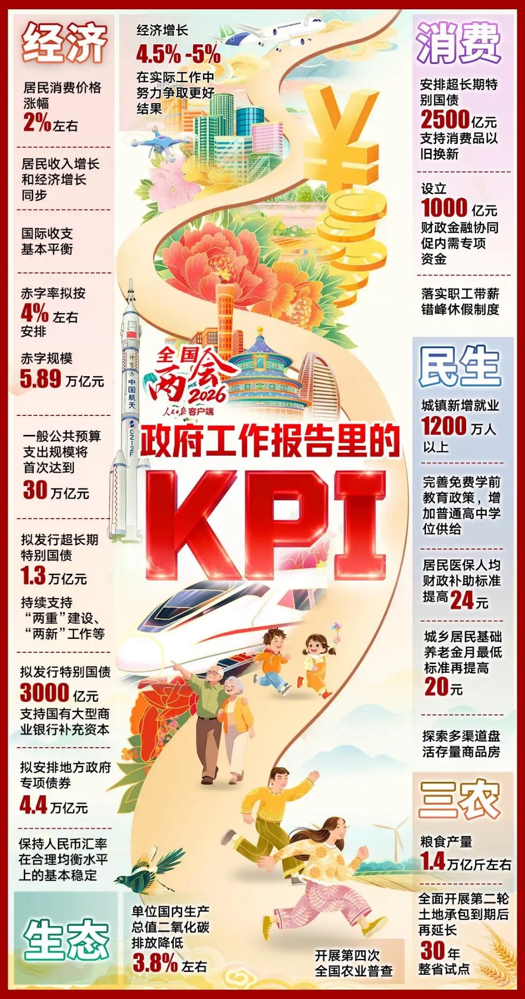
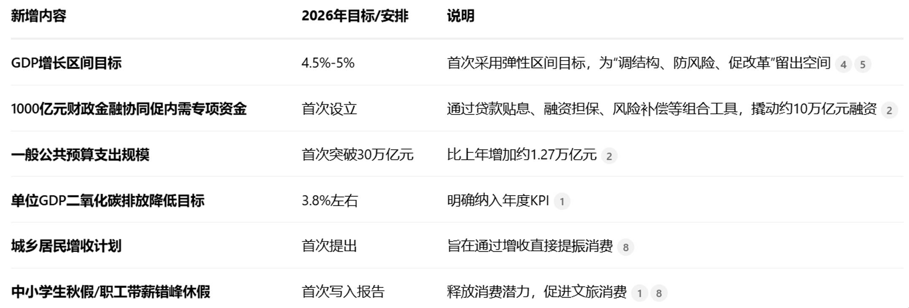
| 目标 | 关键任务 | |
|---|---|---|
| 十五五规划 | 创新驱动与科技自立自强：强化国家战略科技力量，在人工智能、量子信息、生命科学、深空深海等前沿领域布局重大科技基础设施，力争全社会研发投入占GDP比重达到3.2%以上，建设教育、科技、人才一体化发展格局。 | 科技 |
| 现代化产业体系：推动制造业高端化、智能化、绿色化，发展新一代信息技术、新能源、新材料、航空航天等战略性新兴产业，前瞻布局量子科技、生物制造、氢能和核聚变能、脑机接口、具身智能、6G等未来产业。 | 科技 | |
| 绿色低碳转型：完善碳排放“双控”制度，建设新型电力系统，推动工业、建筑、交通等领域清洁低碳转型，持续打好蓝天、碧水、净土保卫战，实施重要生态系统修复工程。 | 绿电 | |
| 高水平对外开放：扩大制度型开放，推动“一带一路”高质量发展，优化区域开放布局，建设自贸试验区、海南自贸港、服务业扩大开放综合试点等开放高地，推动货物贸易优化升级、服务贸易和数字贸易创新发展，稳步推进人民币国际化。 | 基建 | |
| 25年12月中央经济工作会议 | 全方位扩大国内需求：把“大力提振消费、提高投资效益，全方位扩大国内需求”摆在首位，推动中低收入群体增收减负，适当提高退休人员基本养老金，加力扩围实施“两新”政策，积极发展首发经济、冰雪经济、银发经济等新消费场景。 | 消费 |
| 以科技创新引领新质生产力发展：加强基础研究和关键核心技术攻关，超前布局重大科技项目，开展“人工智能+”行动，培育未来产业，加强国家战略科技力量建设，综合整治“内卷式”竞争，推动新旧动能平稳接续转换。 | 科技 |
宽基指数
指数估值
低估值只对宽基指数有用，对行业指数没啥作用，因为行业的影响因素较多，例如低估值陷阱的房地产行业和受到“集采”影响的医疗行业，所有和你说行业低估可以买入的人都不要信。
https://danjuanfunds.com/djmodule/value-center
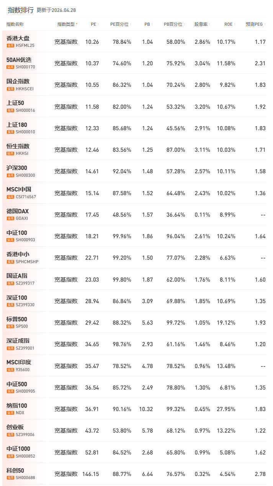
一个完整的美联储货币政策
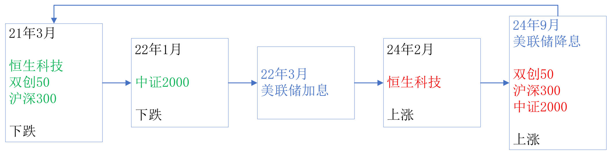
恒生指数
一、货币政策：三元悖论→盯住美元，对美元敏感，美元强就弱→美元指数反向指标
二、地缘政治：外资首站→风险偏好下降，外资撤出
三、汇率波动：人民币兑美元升值→港币相对贬值→会侵蚀以本币计价的投资回报，影响投资积极性。
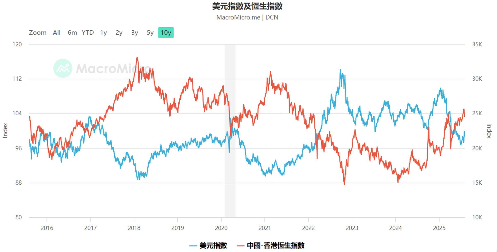
沪深300
一、受到美联储和外资影响较大
二、国家队最爱，可以跟着国家队定投
三、低估可以买入
中证2000
小盘股波动大，游资+量化+散户的小盘炒作
大板块-申万一级
传导路径：核心CPI→工业PPI→猪肉价格→居民CPI
长期-绿电ETF华夏
长期不存在看空逻辑，用电量不断增长(ai电力需求)，又要控制碳排放量(碳中和碳达峰)，加上自主能源安全(石油进口依赖太严重)，所以绿电增长率反而更快了
逆周期防御-港股通高股息ETF
包括银行、煤炭、民生行业等
①在美联储加息阶段，市场风险偏好下降，高股息防御。
②央妈关注核心CPI，经济下行会执行宽货币政策，利好银行股。
③利率的下调，高股息资产提供的稳定现金流成为稀缺资源，其股息率显著高于市场无风险利率，自然形成价值洼地。
④如果加上通胀预期：全球定价资源品价格上涨带动国内能源材料板块盈利修复，而港股高股息板块核心标的多属于对PPI上行反应敏感的行业。
周期
一、矿业ETF国泰
1、主要影响因素：战乱，美元体系不稳定，抗通胀
2、买点：央妈风向标
二、石油ETF鹏华-对应原油
石油国外供给
1、供给：主要是欧佩克+和美国页岩油
2、需求：全球经济放水过热
3、运输：主要是马六甲海峡+霍尔木兹海峡
4、注意：国内会有石油价格管控，就是国内石油价格没有国外的波动大。长期趋势可能保持一致
三、化工ETF鹏华
1、成本：传统能源价格。
2、供给：反内卷，控产能。
3、需求：看经济基本面，经济复苏。
4、买点：PPI拐点
四、建材ETF国泰
1、政策：包括“反内卷”政策、产能调控、绿色建材推广等。六部门发布的《建材行业稳增长工作方案(2025—2026年)》提出严禁新增水泥熟料、平板玻璃产能，推动绿色建材发展。政策对行业供给端有重要影响。
2、供需关系：这是核心影响因素。需求端受房地产和基建投资影响。2026年1-2月基建投资同比增长11.4%，但地产开发投资下滑11.1%。供给端则受产能出清、行业自律等因素影响。
3、成本因素：原材料价格波动直接影响建材企业盈利。国际原油价格波动会影响防水、涂料、管材等石油化工产业链相关产品的成本。煤炭、电力等能源价格也会影响水泥等产品的成本。
科技先进制造
一、恒生科技指数：港股最受关注的板块
二、科创创业ETF富国：新质生产力和核心科技代表，未来发展方向
三、军工龙头ETF富国
只差一个表现机会，如果收复台湾的同时暴打小日本和美国佬，那么军工板块直接起飞，参考25年5月印巴冲突中巴基斯坦吊打印度期间军工板块的表现。
消费
一、恒生消费ETF广发
1、新消费为主，情绪价值。
2、与A股消费的结构性差异：恒生消费指数不含白酒，行业分布更均衡，覆盖食品饮料、纺织服饰、旅游休闲、家庭电器及用品等。服务消费占比超60%，更贴合新消费趋势（如潮玩、新茶饮、国潮美妆、在线旅游等）。
3、国家促消费政策：2025-2026年，政府工作报告连续将“扩大内需”或“提振消费”列为首要任务。
4、财政与货币政策支持：财政部继续实施提振消费专项行动，对重点领域的个人消费贷款和相关行业经营主体贷款给予财政贴息。降低存量房贷利率等政策也增加了居民可支配收入。
二、养殖ETF国泰
1、猪周期为主：未来生猪市场将进入窄幅波动阶段，行业盈利以微利为主，周期被显著拉长，波动幅度大幅收窄。
2、需求：逐年缓慢下降。随着我国居民的肉类消费的丰富，猪肉占肉类的消费比重从2018年的62.1%，降到了2025年的57.8%，像鸡肉牛羊肉等替代性的肉制品分流了一部分对猪的消费需求。
3、供给：规模化养殖。生猪养殖行业规模化率在2018-2024年期间从49%提升到70%，头部十家公司的份额从8.1%上升至25.6%，内卷严重，头部大型养猪企业今后可能更接近于公用事业。
4、政府干预：猪价大幅下跌时启动收储机制托底市场，猪价过快上涨时通过投放储备等方式稳定价格，从上下两端限制波动幅度。
5、目前：生猪供给总量保持高位，但长期来看需求却稳中有降，供强需弱主导当前猪价持续探底。
6、猪肉价格和股价高度同步，股价先行
7、原油价格的长期高位会导致猪肉价格上涨，大概半年时间可以传导到。
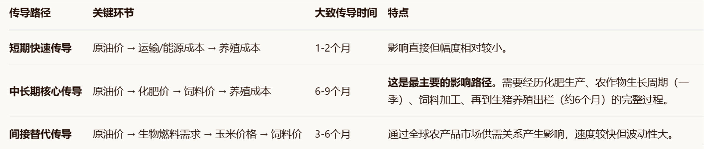
三、消费龙头ETF华宝
1、传统消费为主，生存价值。
2、影响因素包括
-
城乡居民人均可支配收入增加
-
社会消费品零售总额同比增长
-
家电板块的政策补贴国补和出海
-
CPI温和上涨
3、风险偏好下降时候，资金从科技周期转向业绩确定的消费医疗板块
4、26年全国两会促内需专项资金1000亿
医药医疗
医药板块是典型的“政策市”，但2026年的核心矛盾已从“国内集采”转向“出海”与“地缘政治”。它兼具消费的刚需(生病必须治)和科技的爆发力(创新药)，但估值体系被政策彻底重塑。
一、港股创新药ETF广发：偏创新
二、医药50ETF富国：偏集采
金融地产
一、证券保险ETF易方达
1、证券行业：
低成本融资去投资获取收益。
资本市场越活跃→交易手续费越多，投资收益越高。
2、保险行业：
用巨额保费投资固收和资本市场。
降息→国债价格上涨。
资本市场活跃→投资收益越高。
二、地产ETF华宝-对应房地产
1、政策：房住不炒+房产税
2、供给：新开工住宅数+新房供给数+二手房挂牌量
3、需求：出生人口下降+高城镇化率+高负债率+购房主力人群减少
4、买点：银行利率下降+股市大涨+房价大跌，预计28年左右
用脚投票-公募基金季度前10大股票
从2024年一季度开始，腾讯控股的排名先上升，然后下降，对应的是外资先流入港股，然后流出
从2024年一季度开始，贵州茅台的排名先下降，然后上升，对应的是国内内需消费先低迷，然后企稳，最后消费好转
宁德时代一直都是公募基金的重仓仓位
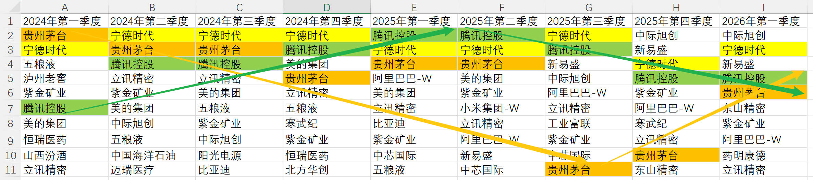
根据中国证监会的规定，公募基金的季度报告需要在每个季度结束之日起15个工作日内编制完成并披露
-
第一季度报告（1-3月）：需在4月15个工作日左右披露
-
第二季度报告（4-6月）：需在7月15个工作日左右披露
-
第三季度报告（7-9月）：需在10月15个工作日左右披露
-
第四季度报告（10-12月）：需在次年1月15个工作日左右披露
外汇
美元是基轴货币
一、石油美元体系
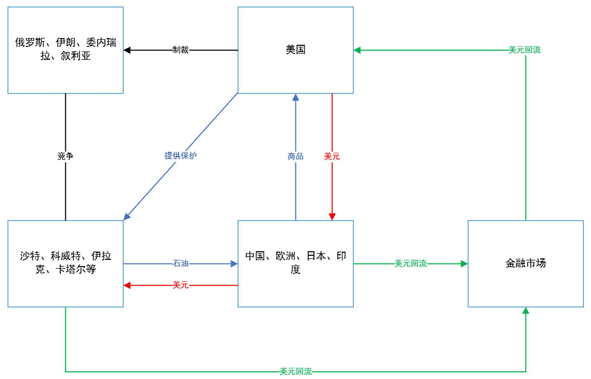
动摇原因：美国从石油进口变成出口；亚洲变成中东最大石油买家；美国对俄罗斯和伊朗的制裁间接推动；
但是不太可能快速崩盘，没有替代品出现和新的体系。
二、全球外汇市场主要货币对交易量排名(2025年)
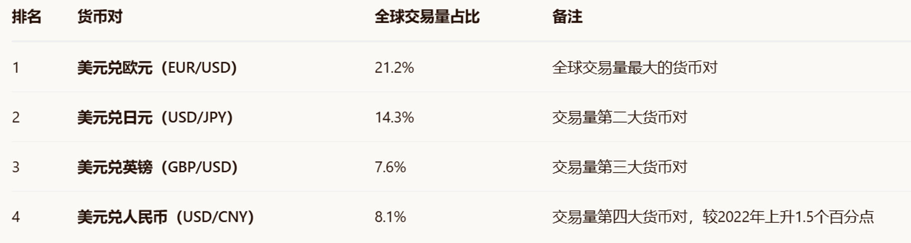
欧元兑人民币、英镑兑人民币、日元兑人民币等交叉货币对在全球外汇交易量中占比相对较小，主要在中国外汇市场交易。
影响因素
一、长期因素
1、汇率制度(蒙代尔不可能三角、三元悖论)
指一个国家不可能同时实现资本自由流动、货币政策独立和汇率稳定，只能三选二并牺牲其一；例如央妈维持人民币在区间波动，不会单边升值或者贬值。
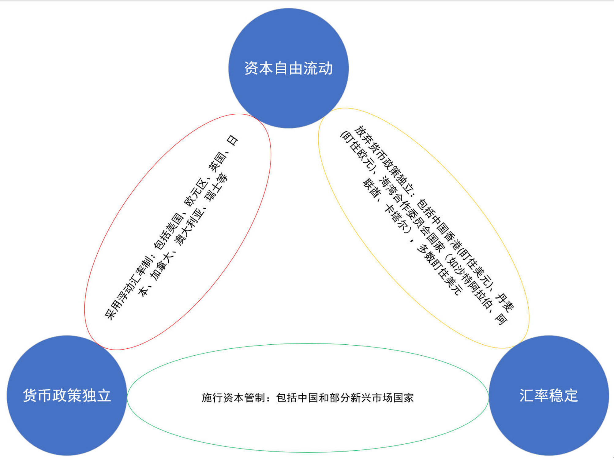
2、综合国力下降，本币长期贬值。综合国力判断指标包括：GDP走势、世界500强数量走势、国际专利申请量等。
二、短期因素
1、货币政策
经济强劲|通胀上涨→加息预期上涨→本国货币需求增加→本国货币走强(必须符合金融强国+消费大国，例如美国，美联储是全球央行)。
通胀上涨→10年期国债收益率上升→国债价格下跌→持有本国国债的投资者卖出国债亏损(因为没有人会持有10年国债等到期)。
2、财政政策
财政扩张→减少税收增加政府支出→市场本国货币变多，本国货币贬值。例如高市早苗的财政扩张导致日元走弱。
3、贸易顺差本币升值
贸易顺差国→企业结汇，将外汇换成本国货币→本国货币需求上升，升值(必须符合资本自由流动+企业愿意结汇)。逆差国希望顺差国货币升值，用来减轻自己的贸易逆差。例如美国和日本的广场协议。
4、资源国
商品价格上涨→商品需求增加→商品国的货币走强。例如澳大利亚和俄罗斯。
5、其它不确定因素
大选不确定、本国处于战争爆发的时间段、地震使经济受损、本国发生全民大罢工因素等。
外汇交易本质
看主要货币对
一、美元兑欧元交易量，美元兑日元交易量，美元兑英镑的交易量大于美元兑人民币
二、欧元兑人民币、英镑兑人民币、日元兑人民币等交叉货币对在全球外汇交易量中占比相对较小
三、人民币使用三元悖论中的货币政策独立和汇率稳定，央行维护人民币汇率稳定
美元
一、美元是世界货币，美联储货币紧缩买美元
二、美联储货币宽松，买交叉货币欧元、英镑、日元等
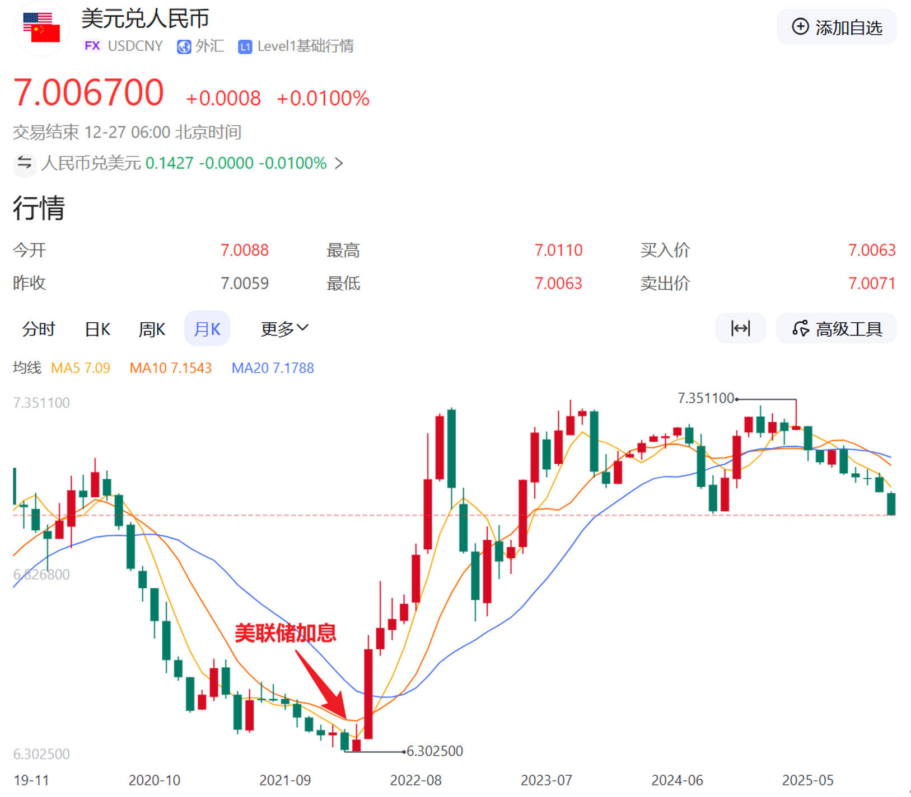
日元
一、日元特殊性
1、美国在日本有驻军，日本是美国的小弟
2、安倍晋三的QQE政策让大量的日元套利资产投资到美股和美债。
所以，日元的走势看美国的态度，主导因素要看美日国债的差额。并且如果美国爆发金融危机，日元被动升值。
二、美国让日元升值的方式
1、汇率检查，纽约联储向主要交易商询价，传递干预态度。
2、美国和日本的官员口头干预。
3、间接干预，美联储降息日本央行加息。
4、直接干预，日本卖出美债买入日元，或者日本动用外汇储备买入日元。日本10年期国债收益率超过2%会引起日债崩盘，短期日本寿险公司因持有巨量日债面临浮亏，被迫抛售海外资产(如美债)以补充资本金，导致资金回流日本，支撑日元。
5、签订协议，例如美日广场协议。1985年美国因面临巨额贸易赤字和财政赤字等问题，希望借助美元贬值来改善其贸易状况，于是策划并推动了广场协议的签署。1985年-1987年日元兑美元升值了50%。
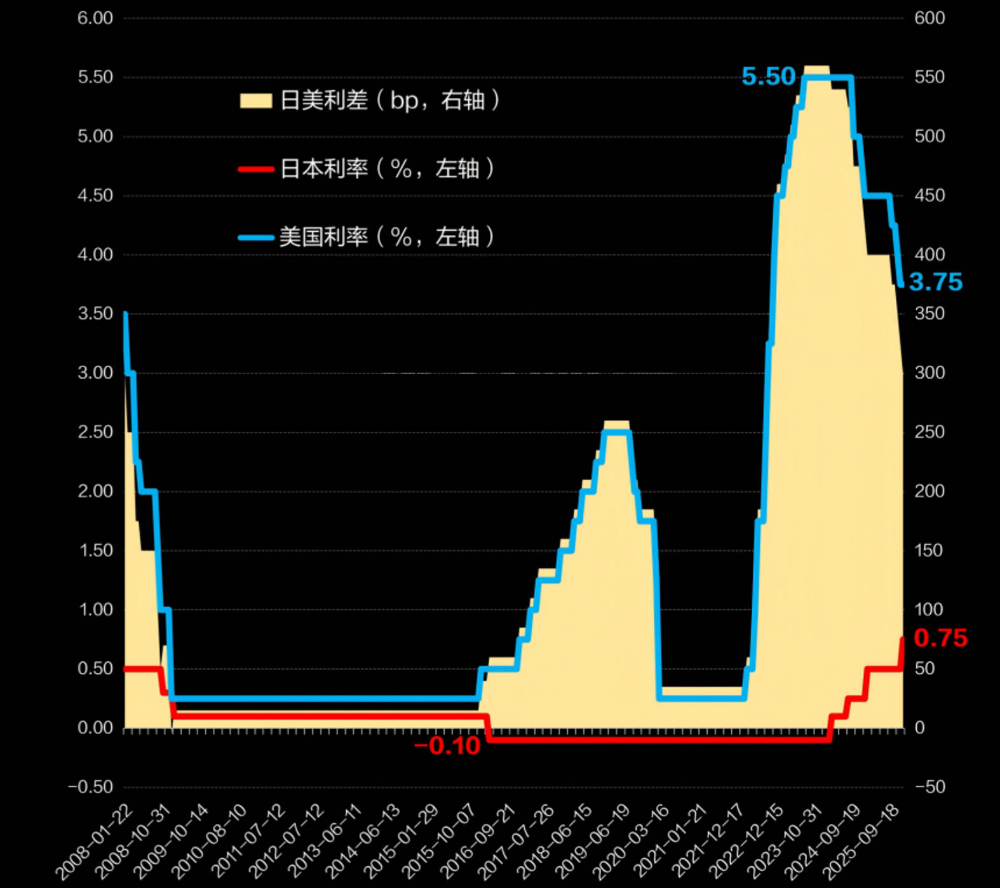
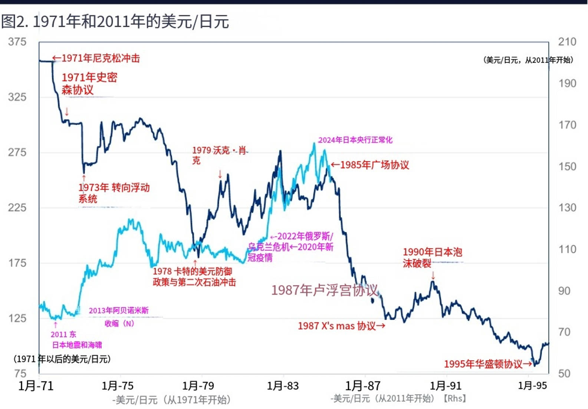
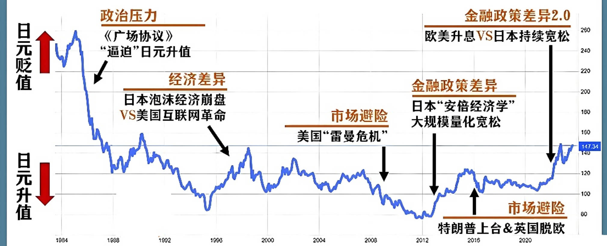
贵金属
勿谓言之不预
1、意为“以后不要说没有跟你事先说过”
2、1962年9月22日的社论《是可忍，孰不可忍》是针对印度，末尾提到“勿谓言之不预”，一个月后对印反击战打响。
3、1978年12月25日的社论《我们的忍耐是有限度的》是针对越南，末尾也提到了“勿谓言之不预”，两个月后对越反击战打响。
4、由人民日报发表的头版社论，并且署名“钟声”，才会被人们视为“终极警告”。
中国撤侨，必有大事
| 时间地点 | 内容 |
|---|---|
| 2011年利比亚 | 中国撤离3.5万公民后仅数日，北约即对利比亚发动空袭，最终导致卡扎菲政权崩溃 |
| 2015年也门 | 中国海军临沂舰撤离公民48小时后，沙特联军启动“果断风暴行动”，对胡塞武装展开全面轰炸，也门陷入十年内战 |
| 2022年乌克兰 | 中国10天内撤离5000余人后，俄乌冲突持续至今未止 |
| 2025年6月伊朗 | 中国启动撤侨同日(6月17日)，以色列驻美大使预告“本周将有远超寻呼机行动的重大军事行动”；美国“尼米兹号”航母驶向波斯湾，与2003年伊拉克战争前部署模式高度相似 |
基本内容
一、黄金的变现能力仅次于现金，所以在发生流动性危机的时候黄金也会下跌。
二、有色金属：黄金、白银、铜
三、黄金ETF：跟踪了实物黄金价格走势，方便交易
四、黄金股票ETF：黄金ETF的放大器
五、国际暗金周末和放假时间也在交易，如果在非正常时间发生某件大事可以看国际暗金的反应。
黄金
最长回调时间7年，跌50%
影响因素
一、长波是黄金的主导因素。衰退和萧条是黄金的大牛市。
二、乱世买黄金。热战让黄金上涨，2022年2月俄乌冲突、2023年10月巴以冲突、2026年1月美国斩首委内瑞拉总统马杜罗、2026年3月伊朗vs美国和以色列冲突、中美对抗等。
三、抗美元信用风险。美国经济强劲和美元信用体系稳定的时候黄金走弱，美元指数下跌黄金上涨，所以才有美元指数和黄金走势负相关。
四、黄金长期抗通胀。
其它
一、央妈购金是风向标
二、上涨顺序：黄金→白银→铜
原油
大宗商品基本内容
一、大宗商品分类：金属，能源，食品。
二、大宗商品大牛市是由世界经济长周期的衰退阶段+中周期的强劲复苏成就的，供给和需求的矛盾冲突产生的。
三、长波是商品价格的决定力量，每次长波衰退向萧条的转换都是大宗商品的一次低点。目前是18-19年。
四、大宗商品产能是价格的后置指标。
五、大宗商品产能周期序列1945、1972、2002、2030间隔25年到30年，10年上升期，20年下降期，和固定资产平均使用时间有关系。
原油基本
| 内容 | 说明 |
|---|---|
| 产量 | 沙特、俄罗斯、美国页岩油产量 |
| 沙特收支平衡为80美元/桶，沙特萨勒曼父子不亲美，原油价格不受美国影响 | |
| 俄罗斯收支平衡为60美元/桶，俄乌冲突影响原油价格，结束会让原油价格下跌 | |
| 美国页岩油成本45美元/桶，特朗普支持页岩油生产 | |
| 运输 | 主要是马六甲海峡23%，霍尔木兹海峡21% |
| 中国在过去十年通过管道建设，降低对该海峡的依赖程度 | |
| 2023年11月至2024年4月，也门胡塞武装对红海船只袭击和中东地区的冲突暂未对该霍尔木兹海峡的石油运输造成重大影响 | |
| 需求 | 全球经济发展，例如：疫情降低需求导致原油价格大跌 |
| 欧盟希望原油价格低 | |
| 中国希望原油价格适中，防止输入型通缩 | |
| 可以看IMF世界经济预测 | |
| 历史 | 第一次石油危机，以沙特为首的阿拉伯国家对支持以色列的国家(美、英、日、加、荷等)实施石油禁运，造成油价飙升 |
| 第二次石油危机，伊朗爆发伊斯兰革命+两伊战争，导致石油产量锐减，引发国际石油价格大幅上涨 | |
| 海湾战争，石油供应突然中断与市场恐慌情绪导致油价上涨 | |
| 亚洲金融风暴，世界经济衰退，石油需求减少 | |
| 雷曼危机，世界经济衰退，石油需求减少 | |
| 阿拉伯之春，地缘政治风险冲击石油供应与市场恐慌情绪导致油价上涨 | |
| 页岩油革命，大幅增加石油产量，石油价格下跌 | |
| 新冠疫情，世界经济衰退，石油需求减少 | |
| 俄乌冲突，西方制裁俄罗斯，石油产量减少 | |
| 俄乌冲突结束，石油供应增加，石油价格下跌 | |
| 伊朗vs美国和以色列，霍尔木兹海峡封锁，原油价格上涨 |
石油储量
得益于技术进步和持续勘探，全球已探明储量近几十年并未减少，反而稳步增长
| 国家 | 剩余开采时间 |
|---|---|
| 委内瑞拉 | 3038亿桶，大于500年 |
| 利比亚 | 484亿桶，339年 |
| 伊朗 | 1578亿桶，140年 |
| 科威特 | 1015亿桶，103年 |
| 伊拉克 | 1450亿桶，96年 |
| 加拿大 | 1681亿桶，89年 |
| 沙特 | 2975亿桶，74年 |
| UAE | 978亿桶，73年 |
| 尼日利亚 | 369亿桶，56年 |
| 哈萨克斯坦 | 300亿桶，45年 |
| 俄罗斯 | 1078亿桶，28年 |
| 中国 | 260亿桶，18年 |
| 美国 | 688亿桶，11年 |
国际石油安全边际
| 内容 | 说明 |
|---|---|
| 安全线 | 90美元/桶： 当布伦特原油价格持续运行于90美元/桶上方时，全球股市(包括A股)通常呈现熊市特征 |
| 100美元/桶： 这是重要的心理关口和市场分界线。当前(2026年3月)国际油价已突破这一水平，WTI原油报价约104美元/桶，布伦特原油约108美元/桶 | |
| 120-150美元/桶： 如果霍尔木兹海峡持续关闭1-3个月，油价可能试探120-150美元区间。IMF研究显示，油价每上涨10%，全球GDP增速将下降约0.1%-0.2个百分点，通胀上升约0.4个百分点 | |
| 150美元/桶以上： 若油价长期维持在此水平，全球经济将陷入衰退，需求被迫大规模萎缩 | |
| 200美元/桶： 这是极端情景下的警戒线。如果霍尔木兹海峡全面封锁超过25天，油价有可能冲击200美元。但这更多是一个临界点而非稳定交易价格，一旦触碰会引发经济自我调整机制 | |
| 安全储备 | 20天，警戒线，保障生产生活正常运行的最低标准 |
| 40天，安全线，保障国民经济平稳运行 | |
| 90天，合格标准，国际能源机构(IEA)要求成员国维持的最低标准 | |
| 180-240天，应对局域威胁标准，可被动应对区域性危机 | |
| 12-18个月，主动战争标准，可主动发起局部战争 |
主要国家的石油储备
| 国家 | 总储备可用天数(估算) | 战略储备(SPR) | 商业/民间储备 | 备注与特点 |
|---|---|---|---|---|
| 日本 | 约248-254天 | 146天(国家储备) | 101天(民间储备)+7天(产油国共同储备) | 全球最高水平。法律强制民间储备70-90天，加上国家储备，抗风险能力极强 |
| 中国 | 约110-180天 | 60-80天(战略储备) | 50-60天(商业储备) | 增长最快。2025-2026年大规模扩建储备基地，目前已远超IEA要求的90天安全线 |
| 美国 | 约139-148天(按净进口量) | 90天(战略石油储备) | 49天(商业库存) | 特殊情况：美国自身是产油大国，其SPR主要针对净进口中断。若按总消费量计算，储备天数仅约60-70天 |
| 韩国 | 约207-254天 | 112天(政府储备) | 95天(民间储备) | 在IEA成员国中仅次于日本。采用政府+民间双轨制，总储备量超1.95亿桶 |
| 德国 | 约92-100天 | 符合IEA标准 | 占大头 | IEA成员国强制要求至少90天。依赖中东原油的比例低于东亚 |
| 法国 | 约91天 | 以成品油为主 | 因国内炼油能力强，成品油需求占比高(约70%） | |
| 印度 | 约74-110天 | 60-70天 | 30-40天 | 正在加速扩建地下储备库，目标是达到150天，但目前略低于东亚邻国 |
| 英国 | 约95天 | 接近自给，石油自给率92% |
期货
普通人别玩期货。期货的初衷，是给厂商一个降低价格波动风险，做一个套期保值的对冲效果而设立的。是给场内大量现货持有庄家，赚时间价值和“上保险”的作用。
虚拟货币
| 分类 | 内容 |
|---|---|
| 传统虚拟货币 | 举例：腾讯的Q币 |
| 风险：账号被盗、黑客攻击、企业倒闭破产 | |
| 新型虚拟货币 | 举例：比特币。比特币最大的数量就是2100万个，挖矿机挖掘比特币具有随机性 |
| 风险：账号被盗，没有国家为它背书，其去中心化和匿名特性会帮助犯罪分析进行赌博、洗钱和逃税等 | |
| 比特币的实际价值由挖矿所用的电力成本和矿机成本决定 | |
| 美国大资金很喜欢炒作比特币，特朗普和马斯克都是虚拟货币上涨的助力因素 |
其它
投研自媒体
除了公众号、头条、知乎、B站之外，其它自媒体平台都是比较扑街状态。
辨别消息的真伪
押注网站的数据和对应资产价格的反应。